開卷有益 ／
學科能力測驗 ／ 自然 ／ 115 年115 年學科能力測驗自然試題與答案
這一頁是民國 115 年學科能力測驗自然的整份歷屆試題，共 56 題，題目與標準答案出自大考中心 學測歷年試題（依著作權法 §9，考試試題不受著作權保護），其中 56 題附有詳解。以下逐題列出題幹、選項與答案；要計時作答或記錄成績，請用線上練習。
線上作答這一科 →
全部 56 題
第 1 題
陽光從太陽發射傳遞至地球大約需時 500 秒，又已知月球與地球的平均距離約為 0.0025 天文單位，試問登陸月球的太空船將資訊透過無線電訊號傳達地球大約需時多少秒？
（A） 0.001（B） 0.1（C） 1（D） 10（E） 100答案：（C）
詳解與考點 正解：本題採比例法，因無線電訊號與陽光同為電磁波，傳播速度相同；已知 1 天文單位對應 500 秒，即可直接換算月地距離。月球距地球＝0.0025 天文單位。傳播時間＝0.0025×500 秒＝1.25 秒。1.25 秒約為 1 秒，故 C 為正解。
A：0.001 秒把 0.0025 天文單位的比例縮得過小，未正確計算 0.0025×500＝1.25。
B：0.1 秒仍小於正確的 1.25 秒一個數量級，比例換算錯誤。
D：10 秒大於正確的 1.25 秒，將比例換算放大。
E：100 秒遠大於正確的 1.25 秒，未依 0.0025 的距離比例縮短傳播時間。
本題考點：電磁波傳播——無線電與可見光皆以光速傳播；比例計算——距離縮為 0.0025 倍時，時間也縮為 0.0025 倍，即 500×0.0025＝1.25 秒。
第 2 題
從宇宙形成至今不斷有天體陸續生成，科學家可以藉由不同的方法來判斷天體的年齡。以下有關不同天體的敘述何者錯誤？
（A） 所有的恆星都是在宇宙形成後才出現（B） 銀河系存在的時間比太陽系存在的時間長（C） 距離地球五百萬光年的星系，其年齡是五百萬年（D） 太陽系中的行星與衛星都比太陽年輕（E） 同一星系內的不同星團，其年齡不盡相同答案：（C）
詳解與考點 正解：題眼是「距離地球五百萬光年」，這表示光從該星系傳到地球所花的時間，不是星系的形成年齡。C：我們看到的是該星系五百萬年前的樣子，但其本身可能已有數十億年歷史，故 C 的敘述錯誤，為正解。
A：宇宙形成後才逐漸形成恆星，敘述正確。
B：銀河系約 132 億年，太陽系約 46 億年，銀河系存在時間較長，敘述正確。
D：太陽系行星與衛星由原始太陽星雲殘餘物質後來聚集形成，比太陽稍晚，敘述正確。
E：同一星系中的各星團形成時間不同，年齡不盡相同，敘述正確。
本題考點：光年與天體年齡——光年是距離單位，觀測到距離 500 萬光年的星系，只代表接收到其 500 萬年前發出的光；天體年齡須依形成與演化證據判定，不可直接以距離代替。
第 3 題
天文觀測從一開始的可見光逐漸走向多波段觀測，下列有關於天文觀測的描述何者正確？
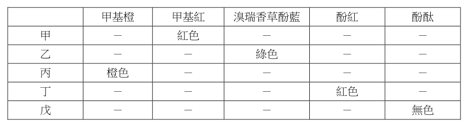
（A） 大氣窗是指某些地區讓各種波長的電磁波都可以通過地球大氣層（B） 若想要觀測宇宙中低溫的星雲，最適合使用 γ 射線進行觀測（C） 天文學家都透過觀測到的顏色來估恆星與行星表面溫度（D） 紅外線望遠鏡放在太空中的原因之一，是為了避免溫室氣體的吸收（E） 大氣中的臭氧會吸收紫外線，其主要分布在中氣層內答案：（D）
詳解與考點 正解：題幹問多波段天文觀測，紅外線容易受地球大氣成分吸收，關鍵是大氣吸收與熱輻射干擾。D：將紅外線望遠鏡置於太空，可避免水蒸氣、CO₂ 等溫室氣體吸收紅外線，也可減少大氣本身熱輻射的干擾，故 D 為正解。
A：大氣窗是大氣對特定波段電磁波透射率較高的範圍，不是特定地區讓所有波長都通過。
B：低溫星雲主要在紅外線至微波波段輻射，γ 射線波長極短，不適合觀測低溫天體。
C：恆星可由顏色估計表面溫度，但行星通常反射恆星光，表面溫度應主要依紅外線判斷，不能說都靠顏色。
E：臭氧主要分布於平流層約 15-35 km，非中氣層。
本題考點：電磁波觀測——依天體溫度選擇適當波段，低溫天體多以紅外線或微波觀測；大氣窗判準——只允許特定波段較易穿透，大氣成分會吸收部分紅外線與紫外線。
第 4 題
圖 1 為飽和水氣壓曲線圖，甲、乙、丙、丁分別代表 4 種大氣狀態，甲、乙、丙有相同的水氣壓，甲和丁有相同的溫度。下列敘述何者正確？
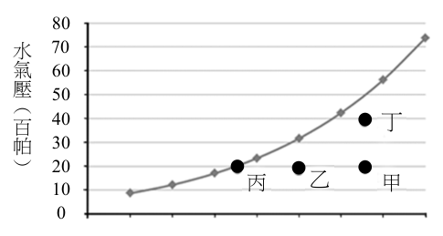
（A） 夏天從冰箱取出冷飲，空氣接觸飲料罐表面會產生類似由乙→丙的過程（B） 冷、暖氣團交會時，暖氣團會產生類似由甲→丁的過程（C） 空氣因地形舉升時，會產生類似由乙→甲的過程（D） 泡溫泉時，在剛放滿熱溫泉水浴池上方的空氣會產生類似由丁→乙的過程（E） 在房間打開電暖氣，室內的空氣會產生類似由乙→丁的過程答案：（A）
詳解與考點 正解：圖中甲、乙、丙水氣壓相同，而乙→丙是水氣壓不變、溫度下降至接近飽和的過程；冷飲罐會使周遭空氣降溫並凝結。A：夏天空氣接觸冰箱取出的冷飲罐表面，因等水氣壓降溫、相對濕度上升而接近飽和並形成水珠，類似乙→丙，故 A 為正解。
B：甲→丁為同溫下水氣壓增加；暖氣團交會的重點非此單純增水氣過程。
C：地形舉升使空氣冷卻，應往較低溫方向；乙→甲是升溫，方向相反。
D：剛放滿熱溫泉水時，上方空氣會因蒸發增溫、增濕，不是丁→乙的水氣壓下降。
E：打開電暖氣主要造成升溫，乙→丁則是溫度不變而水氣壓增加，描述不符。
本題考點：飽和水氣壓圖——橫軸為溫度、縱軸為水氣壓，等水氣壓向左移代表降溫；凝結判準——空氣降溫接近飽和曲線時相對濕度上升，可能凝結成水珠。
第 5 題
威爾斯（J.W. Wells）在 1963 年提出生物時鐘理論。根據珊瑚的年成長值與日成長值推斷出泥盆紀（419-358 百萬年前）時，地球一年有 402 天；而石炭紀（358-298 百萬年前）早期一年則有 393 天。科學家推論此現象主要是由過去到現在地球自轉速率變化而造成，公轉速率則無太大改變。圖 2 為根據生物時鐘理論所推估出不同時間一年的天數。根據此圖，下列敘述何者錯誤？
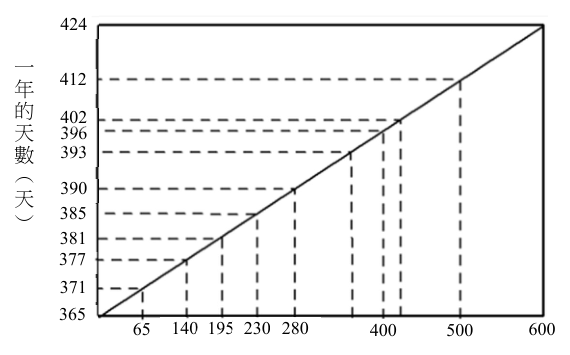
（A） 四億年（400 百萬年）前，地球每一天約 22 小時（B） 六億年（600 百萬年）前，地球的一天約 20.7 小時（C） 從六億年前至今，平均每經過 10 百萬年，地球一年的天數約減少一天（D） 由古至今，地球自轉速率有增快的趨勢（E） 千年後，地球一年的天數與現在相同答案：（D）
詳解與考點 正解：題幹明示公轉速率變化不大，圖中由古至今一年天數遞減；在一年總時數近似固定下，一年天數變少表示每一天變長，亦即自轉變慢。D：說自轉速率有增快趨勢，與圖示趨勢相反，故為錯誤敘述。
A：400 百萬年前約 402 天，每天時數=365×24÷402=21.8，約為 22 小時，正確。
B：600 百萬年前約 424 天，每天時數=365×24÷424=20.7 小時，正確。
C：依圖讀值，600 百萬年前一年約 424 天，現今約 365 天，共減少 424−365=59 天；平均每減少 1 天所經時間=600÷59≈10.2 百萬年，約為 10 百萬年，正確。
E：千年為 0.001 百萬年，相對地質時間尺度極短，圖示所反映的一年天數可視為與現在相同，正確。
本題考點：地球自轉與日長——公轉週期近似固定時，1 年中的天數愈多，每天愈短、自轉愈快；判讀趨勢圖時先確認橫軸是距今時間，再以一年總時數換算日長。
第 6 題
颱風抵達前、正通過以及通過後，當地的風場、氣壓及降雨都會呈現變化。若有一颱風以直線路徑往正西前進，於月日下午點從花蓮登陸，於月日 8 18 2 8 19 清晨 5 點從臺中離開。下列狀況何者最不可能？
（A） 隨颱風眼逐漸接近，花蓮當地氣壓通常會急遽上升後持續下降（B） 花蓮當地在颱風到達前風向會偏北風；通過後則偏南風（C） 臺灣西南部在 8 月 19 日後須嚴防豪大雨發生（D） 颱風中心通過臺中時，臺東地區可能出現焚風現象（E） 8 月 17 日到 8 月 19 日期間，太平洋副熱帶高壓強度較強且位置偏西答案：（A）
詳解與考點 正解：題幹問「最不可能」，判斷關鍵是颱風眼接近前氣壓會持續下降；颱風眼通過時才會出現短暫回升。A：隨颱風眼逐漸接近，花蓮氣壓應持續下降，不會先急遽上升後持續下降；眼區通過的完整變化才可能是先降、後升、再降，因此 A 最不可能，故 A 為正解。
B：北半球颱風環流為逆時針，花蓮在颱風到達前可吹偏北風，通過後轉為偏南風，B 正確。
C：颱風通過後，西南氣流可帶來大量水氣，臺灣西南部須嚴防豪大雨，C 正確。
D：颱風中心在臺中時，臺東可能位於中央山脈背風側，氣流下沉增溫而出現焚風，D 正確。
E：颱風受太平洋副熱帶高壓引導而向西行，表示副高強度較強且位置偏西，E 正確。
本題考點：颱風氣壓變化——眼壁接近時氣壓持續下降，眼區通過才短暫回升；北半球颱風環流——逆時針風向會隨颱風中心通過而轉變；地形與環流判讀——背風側可有焚風，颱風後西南氣流易致西南部豪雨。
各國建置地震或海嘯的預警系統，希望能夠減少地震與海嘯所造成的災害。然而西元 2011 年 3 月 11 日在日本東北地區外海發生大地震（簡稱 311 大地震）並引發海嘯，還是造成日本東北沿岸地區重大的傷亡與財物損失。
第 7 題（多選）
下列敘述哪些正確？（應選 2 項）
（A） 311 大地震發生在板塊邊界帶上（B） 海嘯都是由海底地震活動所引發的（C） 311 大地震造成重大傷亡，說明預警系統無效（D） 臺灣周圍海域與日本東北外海的板塊邊界類型不同，所以不會發生海嘯災害（E） 海嘯波可以在大洋中傳遞，並在遠處造成災害，因此需要全球性的預警系統答案：（A）（E）
詳解與考點 正解：題幹問地震、海嘯與預警系統的基本概念。A：311 大地震位於日本東北外海的日本海溝，屬板塊聚合與隱沒的邊界帶，正確。E：海嘯波可在大洋中長距離傳遞，並在遠方沿岸造成災害，例如 311 海嘯波及夏威夷與美國西岸，因此需要全球性的預警系統通報，正確。
B：海嘯不全由海底地震引發；海底火山爆發、海底山崩或隕石撞擊也可能造成海嘯。
C：造成重大傷亡不等於預警系統無效；地震規模、海嘯高度、避難時間與防護設施都會影響災情。
D：臺灣周圍海域也有板塊邊界與隱沒帶，不能因邊界類型不同就斷言不會發生海嘯災害。
本題考點：海嘯成因——海底地震是常見但非唯一原因；板塊邊界與海嘯風險——聚合隱沒帶易發生強震海嘯；預警系統——可減災但不能保證完全無災。
第 8 題（多選）
以 311 大地震為例，若 P 波波速為每秒 6 公里，S 波波速為每秒 3 公里，海嘯波波速為每分鐘 12 公里。假設距離震源最近的地震站位於和震源相距 150 公里的海岸線上，該地震站收到波後，計算並發出地震與海嘯預警的時間約需秒， P 10 則下列敘述哪些正確？（應選 2 項）
（A） S 波抵達海岸線前沒有預警時間（B） S 波抵達海岸線前的預警時間約為 15 秒（C） S 波抵達海岸線前的預警時間約為 50 秒（D） 海嘯抵達海岸線前的預警時間約為分鐘 12（E） 海嘯抵達海岸線前的預警時間約為 120 分鐘答案：（B）（D）
詳解與考點 正解：預警時間＝危害波到達時間−預警發出時間；須先由P波抵站時間加上計算與發送的10秒。B：P波到達時間=150÷6=25秒，預警發出時間=25+10=35秒；S波到達時間=150÷3=50秒；S波到達前預警時間=50−35=15秒，故B正確。D：海嘯到達時間=150÷12=12.5分鐘。預警發出時間35秒=35÷60=0.5833分鐘；海嘯到達前預警時間=12.5−0.5833=11.9167分鐘，約12分鐘，故D正確。
A：S波到達前尚有15秒預警時間，並非沒有預警時間，錯誤。
C：S波預警時間為15秒，不是50秒；50秒是S波抵達海岸線的時間，錯誤。
E：海嘯預警時間約12分鐘，不是120分鐘，錯誤。
本題考點：波速計算——到達時間＝距離÷波速；預警時間判準——從危害波到達時間扣除預警發出時間；單位換算——35秒=0.5833分鐘，與海嘯的分鐘單位相減。
第 9 題（多選）
科學家以各種方式研究不同時間尺度上的氣候變遷，圖 3 為臺灣某平原與高山湖泊中沉積物岩芯的孢子與花粉重建紀錄。縱軸為沉積物岩芯的深度，橫軸為蕨類孢子或鐵杉花粉於該深度所有孢子與花粉總量所占的比例。已知蕨類喜歡潮濕的環境，鐵杉喜歡冷涼的環境，假設兩岩芯同樣的深度代表同樣的沉積年代，下列敘述哪些正確？（應選 2 項）蕨類孢子紀錄
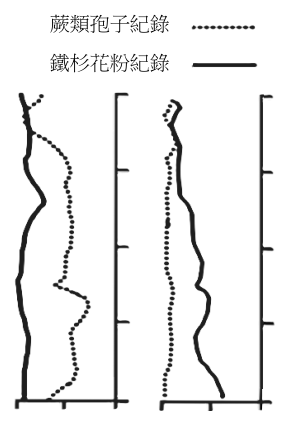
（A） 無論是平原或高山湖泊，當鐵杉花粉比例鐵杉花粉紀錄越多時，可能指示該地越冷涼 1（B） 平原湖泊整段岩芯的鐵杉花粉比例變化沉積不大，主要原因是該地區氣候維持潮濕 2 物岩溫熱芯（C） 高山湖泊整段岩芯的鐵杉花粉比例幾乎都比 3 深度平原湖泊多，主因是高山氣溫較平原低 ︵（D） 在湖泊岩芯到範圍中的蕨類孢子與 4 5 m m 4 ︶ 鐵杉花粉比例都有逐漸降低的趨勢，顯示氣候越來越冷涼 5（E） 湖泊沉積物中的孢子與花粉組合變化主要 0 50 100 0 50 100 （%）（%）是受到人為活動（例如伐木）的影響平原湖泊高山湖泊圖3答案：（A）（C）
詳解與考點 正解：題幹給定蕨類喜潮濕、鐵杉喜冷涼，判讀花粉比例時應把比例高低連回相應植物適生的氣候。A：無論平原或高山湖泊，鐵杉花粉比例越高，表示越適合喜冷涼的鐵杉生長，可能指示當地越冷涼，故 A 正確。C：圖 3 中高山湖泊整段岩芯的鐵杉花粉比例幾乎都高於平原湖泊；高山氣溫較平原低，較適合鐵杉，因此 C 正確。
B：平原湖泊鐵杉花粉比例低且變化不大，主要應由平原較溫熱、不利喜冷涼的鐵杉解釋；「潮濕」是蕨類的環境條件，不能用來解釋鐵杉比例。它看起來對，是因為題圖同時呈現蕨類孢子，容易把潮濕條件誤套到鐵杉。
D：圖中 4～5 m 範圍的蕨類孢子與鐵杉花粉比例並非都有逐漸降低的趨勢，敘述與圖形不符；而且兩者同時降低不能直接推成越來越冷涼。
E：孢子與花粉組合主要反映氣候的溫度與濕度變化，題目未提供伐木等人為活動證據，不能作此過度推論。
本題考點：孢粉紀錄判讀——植物比例增加先連結其適生環境，鐵杉多指向冷涼、蕨類多指向潮濕；圖表推論判準——僅能依圖中趨勢與題設條件推論，缺乏人為活動證據時不得擴張解釋。
第 10 題
有一部質量為 1000 公斤的汽車由靜止開始，在水平路面朝正東方直線加速至速度為 10 公尺/秒。接著它保持等速度前進，一段時間後因失去動力而減速至停止。若汽車的速度隨時間的變化如圖 4 所示，則下列敘述何者正確？
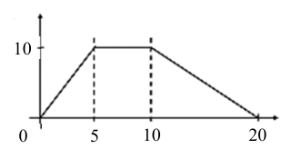
（A） 汽車的加速度量值在減速階段為加速階段的 2 倍（B） 減速過程阻力對汽車所作的功為 \(-5 \times 10^{6}\) 焦耳（C） 汽車的位移在減速階段為加速階段的 2 倍（D） 汽車在加速階段的位移為 50 公尺（E） 整個過程中汽車的位移為 200 公尺答案：（C）
詳解與考點 正解：速度—時間圖下的面積就是位移；依圖 4 讀得，加速段為 0～5 秒，速度由 0 公尺／秒增至 10 公尺／秒；減速段為 10～20 秒，速度由 10 公尺／秒降至 0 公尺／秒，故比較兩三角形面積即可。C：加速段位移＝1／2×10×5＝25 公尺；減速段位移＝1／2×10×10＝50 公尺；50＝2×25，故 C 為正解。
A：加速段加速度量值＝（10－0）／5＝2 公尺／秒²；減速段加速度量值＝（10－0）／10＝1 公尺／秒²，減速段是加速段的 1／2，不是 2 倍，A 錯誤。
B：減速前動能＝1／2×1000×10²＝50,000 焦耳；停止後動能＝0 焦耳。由動能定理，阻力作功＝0－50,000＝－5×10⁴ 焦耳，不是－5×10⁶ 焦耳，B 錯誤。
D：加速段位移＝1／2×10×5＝25 公尺，不是 50 公尺，D 錯誤。
E：依圖 4 讀得等速段為 5～10 秒，位移＝10×（10－5）＝50 公尺；全程位移＝25＋50＋50＝125 公尺，不是 200 公尺，E 錯誤。
本題考點：速度—時間圖判讀——圖下面積為位移，斜率為加速度；三角形面積判準——速度線性增減時，位移＝1／2×底×高；動能定理——合力作功等於動能變化，停止時末動能為 0。
如圖 5 所示，一塔式起重機將一個重物自地面甲點從靜止鉛直上拉，歷經乙、丙兩點後，停止於丁點。其中甲、乙兩點之間保持加速運動，乙、丙兩點之間為等速度運動，丙、丁兩點之間保持減速運動。回答 11-12 題。
第 11 題（多選）
假設重物的位移、速度、加速度與所受合力分別為 \(D\)、\(v\)、\(a\) 與 \(F\)，則下列敘述哪些正確？（應選 2 項）
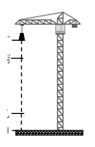
（A） 甲至乙、丙至丁兩段路程，\(F\) 的方向皆向上（B） 甲至乙、丙至丁兩段路程，\(F\) 的方向皆向下（C） 丙至丁段路程之中 \(D\) 與 \(F\) 的方向相同（D） 丙至丁段路程之中 \(v\) 與 \(F\) 的方向相反（E） 丙至丁段路程之中 \(a\) 與 \(F\) 的方向相同答案：（D）（E）
詳解與考點 正解：重物全程向上移動；甲至乙向上加速，丙至丁雖仍向上但減速，因此丙至丁的加速度與合力皆向下。D：丙至丁時速度 v 向上、合力 F 向下，方向相反，正確。E：依 F=ma，加速度 a 與合力 F 方向相同；丙至丁兩者皆向下，正確。
A：甲至乙合力向上，丙至丁合力向下，兩段方向相反，不能皆向上。
B：甲至乙合力向上，丙至丁才向下，不能皆向下。
C：丙至丁位移 D 仍向上，合力 F 向下，兩者方向相反。
本題考點：加速與減速判準——速度向上而速率變小時，加速度方向向下；牛頓第二定律——F=ma，合力與加速度方向必相同；位移與速度——物體持續上升時，位移與速度均向上。
第 12 題（多選）
假設 \(U_{甲乙}\)、\(U_{乙丙}\) 及 \(U_{丙丁}\) 分別代表重物於甲至乙、乙至丙及丙至丁三段路程中起點與終點的重力位能變化量，\(K_{甲乙}\)、\(K_{乙丙}\) 及 \(K_{丙丁}\) 分別代表重物於甲至乙、乙至丙及丙至丁三段路程中起點與終點的動能變化量，則下列關係哪些正確？（應選 2 項）
（A） \(U_{甲乙} > K_{甲乙} > 0\)（B） \(K_{甲乙} = K_{丙丁} > 0\)（C） \(U_{乙丙} > K_{乙丙} > 0\)（D） \(K_{甲乙} > K_{乙丙} > K_{丙丁} > 0\)（E） \(U_{甲乙} = U_{乙丙} = U_{丙丁} > 0\)答案：（B）（E）
詳解與考點 正解：題設以 K 表示動能改變量的大小，應先由各段起、終速度計算；以改變量大小判斷，才能與官方答案 B 一致。B：甲點與丁點皆靜止，甲→乙由 0 加速到 v_max，K甲乙＝｜1/2mv_max²−0｜＝1/2mv_max²＞0；丙→丁由 v_max 減速至 0，K丙丁＝｜0−1/2mv_max²｜＝1/2mv_max²＞0，所以 K甲乙＝K丙丁＞0，故 B 正確。E：三段皆鉛直上升，且圖示三段上升高度相等，設各段高度為 h，則 U甲乙＝mgh、U乙丙＝mgh、U丙丁＝mgh，故 U甲乙＝U乙丙＝U丙丁＞0，E 正確。
A：甲→乙雖有 U甲乙＞0、K甲乙＞0，但 U甲乙＝mgh、K甲乙＝1/2mv_max²；題目未給 h 與 v_max 的大小，不能斷定 U甲乙＞K甲乙，A 錯誤。
C：乙→丙為等速度，末速與初速相同，K乙丙＝｜1/2mv_max²−1/2mv_max²｜＝0，不是 K乙丙＞0，C 錯誤。
D：K乙丙＝0，不符合選項所稱 K甲乙＞K乙丙＞K丙丁＞0，D 錯誤。它看起來對，是因為三段皆向上運動，容易誤把上升誤認為動能改變量都大於 0；動能是否改變應看速度大小，不看位移方向。
本題考點：動能改變量大小——以 K＝｜1/2mv末²−1/2mv初²｜計算，等速時為 0，加速與減速若速率端點相反則改變量可相等；重力位能變化——U＝mgΔh，只由垂直高度差決定；關係判準——未給定 h 與 v 的關係時，不可任意比較 mgh 與 1/2mv²。
第 13 題
2019 年諾貝爾物理獎主題之一為對太陽系外行星系統的探究。實際上某一行星與某恆星皆以 x 點為圓心作圓周運動，如圖 6 所示。在甲時刻，該恆星接近地球。在乙時刻，該恆星遠離地球。已知在實驗室中，靜止光源發出與該恆星相同光譜線的頻率為 f0。若地面測站與該恆星繞行的圓軌道共平面，則該恆星發出的相同光譜線，從地面測站觀測，所測得頻率 f 隨時間 t 的變化最接近下列何者？
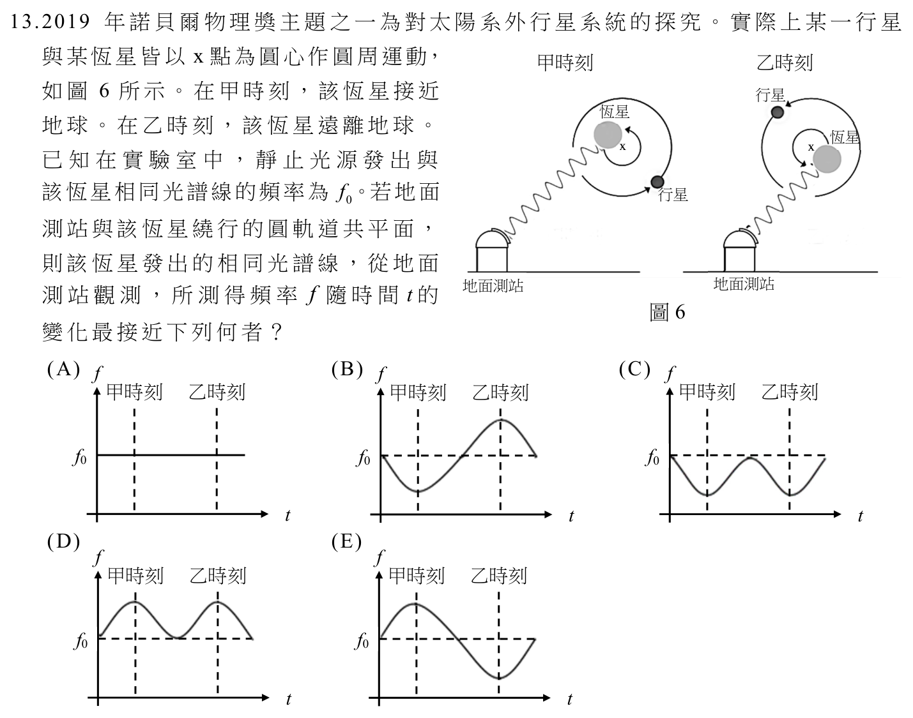
本題選項為上圖中的 A／B／C／D，請對照圖片作答。
答案：（E）
詳解與考點 正解：題幹指定甲時刻恆星接近地球、乙時刻遠離地球，題眼是用光的都卜勒效應判斷頻率高低，再以圓周運動判斷週期性。E：接近時光波波長縮短，f＞f0；遠離時光波波長變長，f＜f0；視線速度為 0 時 f＝f0，因此頻率以 f0 為基準平滑、週期性變化，甲為高頻、乙為低頻，故 E 為正解。
A、B、C、D：這些圖形未同時符合甲時刻 f＞f0、乙時刻 f＜f0，以及頻率隨圓周運動視線速度連續、週期性變化的三項條件，因此皆不正確。
本題考點：光的都卜勒效應——光源接近時，觀測頻率高於靜止光源頻率 f0；光源遠離時，觀測頻率低於 f0。圖形判準——除核對甲、乙兩時刻的頻率高低，還須確認頻率隨圓周運動呈連續週期變化。
第 14 題
一個氦原子的原子核內有兩個質子與兩個中子，而原子核外則有兩個電子環繞。若氦原子裡兩質子間的靜電力量值為甲，兩中子間的重力量值為乙，一個質子與一個電子間的靜電力量值為丙，兩質子間的強力量值為丁，則這四個量值間的大小關係為下列何者？
（A） 甲＝丁＞丙＞乙（B） 丁＞甲＝乙＞丙（C） 甲＞丙＞乙（D） 甲＝丙＞乙（E） 甲＞乙＞丙＞丁答案：（C）
詳解與考點 正解：比較作用力量值時，先看作用力種類，再以庫侖定律的距離平方反比比較兩組靜電力；兩質子距離約 10⁻¹⁵ 公尺，質子與電子距離約 10⁻¹⁰ 公尺。C：甲為兩質子間的靜電斥力，丙為質子與電子間的靜電力。兩者電量乘積量值相同，而甲的距離更近，因此甲＞丙；乙為兩中子間重力，遠弱於靜電力，因此丙＞乙，故甲＞丙＞乙，C 為正解。
A：兩質子間的強力丁在原子核尺度下比靜電力甲更強，不是甲＝丁，A 錯誤。
B：乙為重力，遠小於甲的靜電力，不可能甲＝乙，B 錯誤。
D：甲與丙雖同為靜電力，但距離分別約為 10⁻¹⁵ 公尺與 10⁻¹⁰ 公尺；距離相差 10⁵ 倍，力的量值相差約 10¹⁰ 倍，不會相等，D 錯誤。
E：強力丁不是最小；在原子核尺度下丁大於甲，而乙的重力才最小，E 錯誤。
本題考點：基本作用力比較——原子核尺度的強力大於質子間靜電力，重力最弱；庫侖定律判準——在電量乘積相同時，靜電力量值與距離平方成反比，距離較近者力較大；尺度判讀——核內距離約 10⁻¹⁵ 公尺，原子尺度約 10⁻¹⁰ 公尺。
第 15 題
電場為單位正電荷在空間中任一位置所受的靜電力，電器內常以電場驅動帶電粒子，進行運算、控制與調節等工作。設為牛頓、C 為庫侖、V 為伏特、A 為 N 安培，則下列何者為電場的 SI 單位？ C N V A N2
（A） \(\dfrac{C}{N}\)（B） \(\dfrac{N}{C}\)（C） \(\dfrac{V}{A}\)（D） \(\dfrac{A}{V}\)（E） \(\dfrac{N^2}{C}\)答案：（B）
詳解與考點 正解：B。題幹直接把電場定義為「單位正電荷所受的靜電力」，故應由 E=F/q 推導單位。力 F 的單位是 N，電荷量 q 的單位是 C，所以 E 的單位=N/C；B 為 N/C，故 B 為正解。另由 V=W/q 與均勻電場 E=V/d，可得等價單位 V/m，但本題選項中符合者為 N/C。
A：C/N 是 N/C 的倒數，不是電場單位。
C：V/A=Ω，為電阻單位，不是電場單位。
D：A/V=1/Ω，為導納單位，不是電場單位。
E：N²/C 比 N/C 多乘一個 N，與 E=F/q 的單位推導不符。
本題考點：物理量單位推導——先寫出定義式 E=F/q，再將 F 代為 N、q 代為 C；單位檢核——N/C 與 V/m 等價，若分子分母顛倒或多出量綱即非電場單位。
第 16 題
假設氫原子中的質子位於 x軸原點，則下列何者最接近電子所受靜電力 F 隨著位置 x的變化？（令靜電力 F 朝 +x方向為正值）
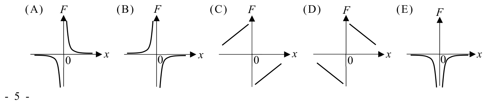
本題選項為上圖中的 A／B／C／D，請對照圖片作答。
答案：（B）
詳解與考點 正解：本題要選電子受質子靜電力的 F-x 圖，關鍵是先由異性電荷相吸判定方向，再用庫侖力大小與距離平方成反比判定圖形。B：質子在原點、電子帶負電，受力永遠指向原點。x>0 時力朝 -x 方向，F<0；x<0 時力朝 +x 方向，F>0。其大小為 |F|＝ke²/x²，當 x→0 時 |F|→∞，當 |x|→∞ 時 F→0；因此 x=0 兩側符號相反且不連續，整體為反雙曲線狀的奇函數圖形，故 B 為正解。
A：若圖在 x>0 區域畫成 F>0，便把電子受力方向畫成遠離質子，違反異性電荷相吸，A 錯誤。
C：若圖在 x<0 與 x>0 兩側同號，便忽略了力始終指向原點，C 錯誤。
D：若圖在 x=0 處有限或連續，便忽略 |F|＝ke²/x² 在距離趨近 0 時發散，D 錯誤。
E：若圖形隨 |x| 增大而力的大小也增大，與靜電力大小和距離平方成反比不合，E 錯誤。
本題考點：庫侖力方向——異性電荷相吸，電子兩側皆受指向原點的力；庫侖力大小——|F|＝ke²/x²，距離趨近 0 時發散、距離增大時趨近 0；F-x 圖判讀——左右兩側符號相反，x=0 為不連續點。
表 1 為地球與月球的赤道日夜均溫。新的登月計畫將設計小型模組核反應器（簡稱 SMR），提供維生與探究的能源。SMR 的發電功率為 =300 MW，採用的 P e 核反應如圖 7 所示。一顆中子射入一個鈾核，激發核反應，產生核能 E 、一個鋇核、 N 一個氪核與顆中子。SMR 之核能轉換為電能的效率 3 鋇核Ba 約是 33%。依據以上資料與所學，回答下列問題。鈾核U 中子表1 n 中子時段 n n 核能EN 日間夜間中子星球中子 n 地球 31℃ 23℃ 氪核Kr 圖7 月球 121℃ -133℃
第 17 題
已知氣體分子平均動能正比於其克氏溫度（絕對溫度），則在月球赤道處，相同氣體分子的平均動能於日間為夜間的多少倍？
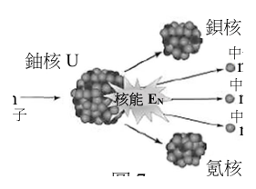
（A） 31/23（B） 304/296（C） 121/133（D） 394/403（E） 394/140答案：（E）
詳解與考點 正解：氣體分子平均動能正比於絕對溫度，題幹給的是攝氏溫度，必須先全部換成克氏溫度再求比值。E：月球日間溫度為 121℃，換算為 121+273=394 K；夜間溫度為 -133℃，換算為 -133+273=140 K。平均動能比＝394÷140＝394/140，故 E 正確。
A：31/23 是地球日、夜均溫的攝氏數值比，並非月球資料，也未換算絕對溫度，A 錯誤。
B：304/296 是將地球的 31℃、23℃ 分別換算為 304 K、296 K 後的比值，使用對象不是月球，B 錯誤。
C：121/133 直接以月球的攝氏溫度比較，且把夜間 -133℃ 的負號忽略，C 錯誤。
D：日間 394 K 正確，但夜間寫成 403 K；依 -133+273=140，夜間正確值應為 140 K，因此 D 錯誤。它看起來對，是因為 394 已正確換成克氏溫度，容易忽略夜間攝氏溫度的負號。
本題考點：溫度與分子平均動能——平均動能正比於絕對溫度，不可直接以攝氏溫度求比；攝氏轉克氏判準——T(K)=t(℃)+273，負攝氏溫度也要連同負號代入換算。
第 18 題
假設圖 7 中鈾核、氪核、鋇核及中子的質量分別為 M 、 M 、 M 及 M ，核反應 U Kr Ba n 發生頻率控制為 R （即每秒發生核反應的次數）。已知該核反應前後質量損失為 N Δm=3.3 ×10-28 kg，光速為 c=3×108 m/s，則下列有關該 SMR 發電的敘述，何者正確？
（A） Δm=M -(M +M )（B） E =Δm×c（C） E 約為 3×10-8 J U Kr Ba N N P ×33%（D） R = e（E） R 約為 3×1019 Hz N N E N答案：（E）
詳解與考點 正解：題幹給質量損失 Δm=3.3×10^-28 kg、光速 c=3×10^8 m/s、電功率 Pe=300 MW=3×10^8 W 與效率 33%，須先用 E=Δm×c² 求每次反應核能，再以效率換算反應頻率。每次反應核能 EN=3.3×10^-28×(3×10^8)²=3.3×10^-28×9×10^16=29.7×10^-12≈3×10^-11 J。每秒所需核能=Pe/0.33=3×10^8/0.33≈9×10^8 J。反應頻率 R=(每秒所需核能)/EN=9×10^8/(3×10^-11)=3×10^19 次/秒=3×10^19 Hz。因此 E 為正解。
A：質量損失應為反應物總質量減產物總質量，該式未正確表示反應前後的質量差。
B：質能關係應為 E=Δm×c²，不是 E=Δm×c。
C：由 EN=3.3×10^-28×9×10^16≈3×10^-11 J，可知選項所列數值量級不符，並非 3×10^-8 J。
D：頻率應為每秒所需核能除以每次反應核能，即 R=(Pe/0.33)/EN，公式關係顛倒。
本題考點：質能互換——每次核反應能量用 E=Δm×c² 計算；功率與效率——輸入核能功率=電功率÷效率；頻率判準——每秒所需能量÷每次反應能量。
第 19 題
下列反應所得到的溶液，何者可使藍色的石蕊試紙變為紅色？
（A） 金屬鈉丟入水中（B） 氧化鈣溶於水（C） 3%雙氧水以二氧化錳當催化劑進行分解（D） 二氧化硫在空氣中與雨水作用（E） 小蘇打溶於水中答案：（D）
詳解與考點 正解：題幹問能使藍色石蕊試紙變紅的反應溶液，須判斷生成物是否呈酸性。D：二氧化硫（SO2）與雨水作用生成亞硫酸（H2SO3），在空氣中可再氧化形成硫酸（H2SO4）；兩者皆呈酸性，能使藍色石蕊試紙變紅，故 D 為正解。
A：金屬鈉與水反應生成 NaOH，溶液呈鹼性，會使紅色石蕊試紙變藍。
B：氧化鈣（CaO）溶於水生成 Ca(OH)2，溶液呈鹼性。
C：3%雙氧水以 MnO2 催化分解生成 H2O 和 O2，溶液接近中性，不能使藍色石蕊試紙變紅。
E：小蘇打（NaHCO3）溶於水後水解呈弱鹼性，不能使藍色石蕊試紙變紅。
本題考點：酸鹼性判斷——先由反應式找生成物，再判斷水溶液的酸鹼性；石蕊試紙判準——酸性使藍色變紅，鹼性使紅色變藍。
第 20 題
相圖是表示物質的狀態（常見有固態、液態、氣態）與溫度、壓力的關係圖，可得知熔點與沸點會隨著壓力而改變。圖8 是化合物甲的相圖，表2 列出化合物甲在 1.0 大氣壓下的一些物理性質。若取 20.0 克的甲，在 1.0 大氣壓下，由 0 ℃ 加熱至 150 ℃，則所需的熱量約是多少（kJ）？
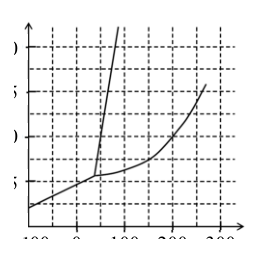
表2 化合物甲在 1.0 大氣壓下的一些物理性質 物理性質 數值 莫耳質量 100.0 g/mol 熔化熱 4.0 kJ/mol 汽化熱 20.0 kJ/mol 固體莫耳比熱 100 J/mol·℃ 液體莫耳比熱 120 J/mol·℃ 氣體莫耳比熱 30 J/mol·℃
（A） 4.2（B） 5.8（C） 7.4（D） 21.0（E） 29.0答案：（A）
詳解與考點 正解：題眼在 1.0 大氣壓下由 0 ℃ 加熱到 150 ℃，應先依圖8判斷相變，再以「熔化熱＋各相升溫熱」分段計算。20.0 g÷100.0 g/mol=0.20 mol。由 1.0 atm 水平線判讀，甲先在熔點約 0 ℃ 熔化，再以液態升溫至 150 ℃；沸點高於 150 ℃，不汽化。固體升溫段因起點即在熔點附近可忽略。熔化熱=0.20 mol×4.0 kJ/mol=0.8 kJ。液體升溫熱=0.20 mol×120 J/(mol·℃)×(150−0)℃=3600 J=3.6 kJ。總熱量=0.8 kJ+3.6 kJ=4.4 kJ，最接近 A 的 4.2 kJ，故 A 為正解。
B：5.8 kJ 不等於分段相加所得的 4.4 kJ，表示額外加入了題目升溫範圍內未發生的熱量，B 錯誤。
C：7.4 kJ 也高於 4.4 kJ；它看起來對，是因為加熱題常須把相變熱列入，但本題已計入 0.8 kJ 熔化熱，不能再加入未發生的相變熱，C 錯誤。
D：21.0 kJ 比 4.4 kJ 多 16.6 kJ，已不是「熔化＋液態升溫」兩段的總和，D 錯誤。
E：29.0 kJ 比 4.4 kJ 多 24.6 kJ，同樣誤計了加熱路徑未經歷的熱量，E 錯誤。
本題考點：相圖判讀與加熱曲線——先在指定壓力下判斷經過的相態與相變；熱量分段判準——每一段分別算 n×莫耳相變熱或 n×莫耳熱容×ΔT，未跨越沸點就不得加入汽化熱。
第 21 題
化學實驗室中有五種酸鹼指示劑，其變色範圍 pH 列於表 3 中。現有甲、乙、丙、丁、戊等五種溶液，小雨想要比較此五種溶液的酸鹼度，於是她在此五種溶液中分別滴入不同的指示劑，所觀察到的顏色如表 4 所示。下列有關溶液中氫離子濃度的比較，何者正確？
表3 指示劑變色範圍 pH 與表4 溶液滴入指示劑後觀察到的顏色 甲基橙 甲基紅 溴瑞香草酚藍 酚紅 酚酞 顏色（變色範圍兩端） 紅 黃 紅 黃 黃 藍 黃 紅 無 紅 變色範圍 pH 3.2～4.4 4.2～6.3 6.0～7.6 6.8～8.4 8.2～10.0 甲 － 紅色 － － － 乙 － － 綠色 － － 丙 橙色 － － － － 丁 － － － 紅色 － 戊 － － － － 無色
（A） 甲＞乙＞丙（B） 甲＞丁＞乙（C） 甲＞丁＞戊（D） 乙＞丙＞戊（E） 丙＞乙＞丁答案：（E）
詳解與考點 正解：比較氫離子濃度時，關鍵是 pH 越小，[H+] 越大。丙的甲基橙顯橙，pH 約在 3.2～4.4；乙的溴瑞香草酚藍顯綠，pH 約在 6.0～7.6；丁的酚紅顯紅，pH＞8.4。因此丙最酸、乙居中、丁最鹼，依序為丙＞乙＞丁，故 E 為正解。
A：甲的甲基紅顯紅只可判定 pH＜4.2，丙則為 pH 約 3.2～4.4，兩者範圍重疊，不能確定甲＞丙，A 錯誤。
B：甲雖偏酸，但丁的 pH＞8.4，丁的氫離子濃度必小於甲，不可能排成甲＞丁＞乙，B 錯誤。
C：戊的酚酞無色只知 pH＜8.2，未必能與甲排成甲＞丁＞戊的次序；且丁的 pH＞8.4，氫離子濃度小於甲，C 錯誤。
D：丙的 pH 約在 3.2～4.4，明顯低於乙的約 6.0～7.6，所以丙的氫離子濃度大於乙，不可能排成乙＞丙，D 錯誤。它看起來對，是因為容易把 pH 數值大小直接當成氫離子濃度大小，卻忘記兩者方向相反。
本題考點：酸鹼指示劑——由顏色對照變色範圍判讀 pH；氫離子濃度判準——pH 越小，[H+] 越大，先比較可確定的範圍再排序。
第 22 題
常溫、常壓下，P O 與 PO 皆為固體，可從 P 固體與氧氣反應而得。在標準狀態下， 4 6 4 10 4 1 莫耳 P 分別與足量氧氣反應，各自生成 P O 與 PO ，且依序放出1640 kJ與 3000 kJ 4 4 6 4 10 的熱量。今有 12.4 克的 P 與氧氣反應後得到 5.5 克 P O 與 21.3 克 PO ，其未平衡 4 4 6 4 10 的熱化學反應式為 P (s)+ O (g)→PO (s)+ PO (s)， ΔH=Q，則 Q 值為何？ 4 2 4 6 4 10 （原子量： O=16.0， P=31.0）
（A） −4640 kJ（B） 464 kJ（C） −266 kJ（D） 250 kJ（E） −232 kJ答案：（C）
詳解與考點 正解：題幹要由生成物的實際莫耳數計算反應熱，先用質量除以莫耳質量，再依各產物的放熱量相加。P4 的莫耳質量＝4×31＝124 g/mol，12.4÷124＝0.1 mol。P4O6 的莫耳質量＝4×31＋6×16＝220 g/mol，5.5÷220＝0.025 mol；P4O10 的莫耳質量＝4×31＋10×16＝284 g/mol，21.3÷284＝0.075 mol。生成 P4O6 放熱＝0.025×1640＝41 kJ；生成 P4O10 放熱＝0.075×3000＝225 kJ；總放熱＝41＋225＝266 kJ，因此 ΔH＝−266 kJ，C 正確。
A：−4640 kJ＝−（1640＋3000）kJ，是把兩個「各 1 mol P4」的反應熱直接相加，漏掉實際只生成 0.025 mol 與 0.075 mol 產物，A 錯誤。
B：464 kJ 的數值與 41＋225＝266 不符，且放熱反應的 ΔH 應為負值，B 錯誤。
D：250 kJ 既未由 41 kJ 與 225 kJ 相加得到，也把放熱誤寫成正值，D 錯誤。
E：−232 kJ 與總放熱 266 kJ 不符，E 錯誤。
本題考點：熱化學計算——先以 n＝m/M 求各產物莫耳數，再以 q＝n×每莫耳反應熱求各部分熱量；反應熱符號——放熱時 ΔH＜0；混合產物——各生成物的熱量必須分開計算後相加。
第 23 題（多選）
圖 9 為週期表的一部分，下列關於甲～戊 5 種元素的敘述，哪些正確？（應選 2 項）
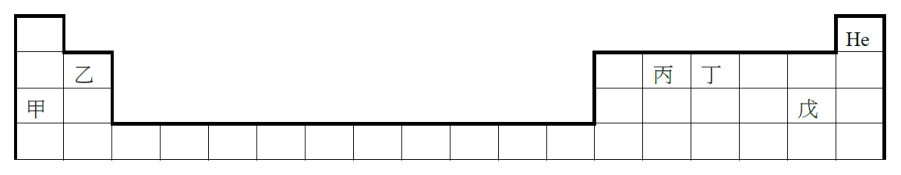
（A） 甲容易失去一個電子，形成帶一個正電荷的陽離子（B） 非金屬性質：丁＞丙＞戊（C） 在自然界中，丙不具有同位素（D） 原子半徑大小：戊＞丁＞丙＞乙（E） 獲得電子的趨勢：戊＞丁＞甲答案：（A）（E）
詳解與考點 正解：依週期表位置判斷最外層電子與週期趨勢。A：甲在第一族，為鹼金屬，最外層有1個電子，易失去形成帶1個正電荷的陽離子，正確。E：獲得電子的趨勢可由電負度與非金屬性判斷，位置愈靠右上愈強，故戊＞丁＞甲，正確。
B：同列非金屬性由左向右增加，丙在丁左側雖有丁＞丙，但戊的位置使「丁＞丙＞戊」不合週期趨勢，B 錯誤。
C：同位素由原子核中中子數不同所形成，不能僅憑週期表位置斷定丙在自然界不具同位素，C 錯誤。
D：同週期原子半徑由左向右變小，戊在丁右側，應有戊＜丁，題述「戊＞丁」方向錯誤，D 錯誤。
本題考點：週期表趨勢——第一族元素易失去1個電子形成+1陽離子；同週期由左向右原子半徑變小、非金屬性與獲電子趨勢變強；同位素與中子數有關，不能由元素位置直接斷定。
第 24 題
下列物質結構的示意圖，何者最能代表在常溫、常壓下鈉金屬的結構？
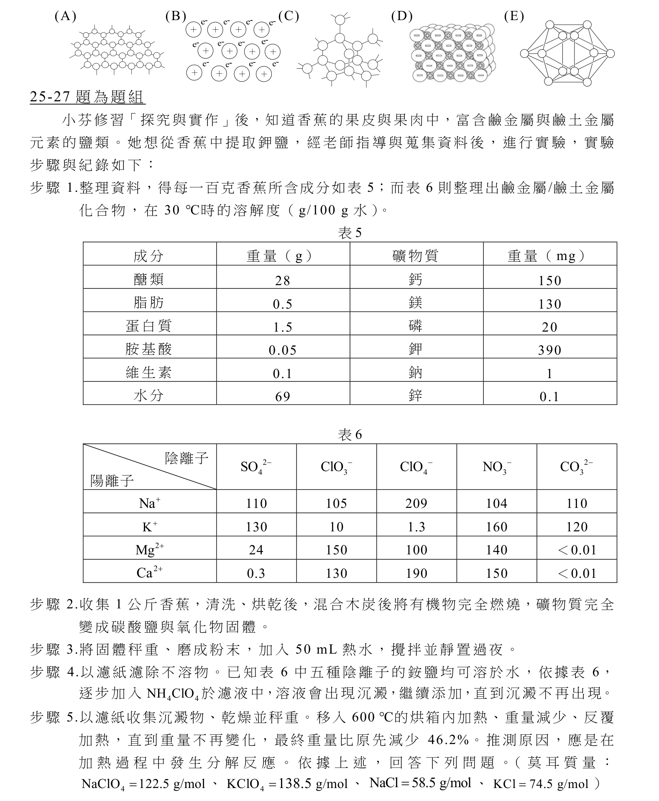
本題選項為上圖中的 A／B／C／D，請對照圖片作答。
答案：（B）
詳解與考點 正解：常溫、常壓下的鈉是金屬晶體，因此要找金屬陽離子規則排列、價電子去定域化的電子海模型。依選項圖，B 顯示規則排列的鈉陽離子周圍有可自由移動的價電子，符合金屬鍵結構，故 B 為正解。
A：依選項圖，A 呈現離散分子，屬分子物質的結構，沒有金屬陽離子與電子海，錯誤。
C：依選項圖，C 呈現連續的共價鍵骨架，屬共價網狀固體，不是金屬鍵，錯誤。
D：依選項圖，D 呈現正、負離子交錯排列，屬離子晶體，不是鈉金屬，錯誤。
E：依選項圖，E 未呈現金屬陽離子與去定域化電子，不能代表鈉金屬的金屬鍵結構，錯誤。
本題考點：金屬鍵——金屬陽離子規則排列，價電子去定域化形成電子海；結構辨識判準——圖中同時呈現金屬陽離子排列與可自由移動的電子，才是金屬晶體模型。
小芬修習「探究與實作」後，知道香蕉的果皮與果肉中，富含鹼金屬與鹼土金屬元素的鹽類。她想從香蕉中提取鉀鹽，經老師指導與蒐集資料後，進行實驗，實驗步驟與紀錄如下：
步驟 1.整理資料，得每一百克香蕉所含成分如表 5；而表 6 則整理出鹼金屬／鹼土金屬化合物，在 30 ℃時的溶解度（g／100 g 水）。
表 5 成分（重量 g）：醣類 28、脂肪 0.5、蛋白質 1.5、胺基酸 0.05、維生素 0.1、水分 69；礦物質（重量 mg）：鈣 150、鎂 130、磷 20、鉀 390、鈉 1、鋅 0.1。
表 6（溶解度 g／100 g 水，陽離子對陰離子）：Na⁺ 對 SO₄²⁻ 110、ClO⁻ 105、ClO₄⁻ 209、NO₃⁻ 104、CO₃²⁻ 110；K⁺ 對 SO₄²⁻ 130、ClO⁻ 10、ClO₄⁻ 1.3、NO₃⁻ 160、CO₃²⁻ 120；Mg²⁺ 對 SO₄²⁻ 24、ClO⁻ 150、ClO₄⁻ 150、NO₃⁻ 140、CO₃²⁻ <0.01；Ca²⁺ 對 SO₄²⁻ 0.3、ClO⁻ 130、ClO₄⁻ 190、NO₃⁻ 150、CO₃²⁻ <0.01。步驟 2.收集 1 公斤香蕉，清洗、烘乾後，混合木炭後將有機物完全燃燒，礦物質完全變成碳酸鹽與氧化物固體。
步驟 3.將固體秤重、磨成粉末，加入 50 mL 熱水，攪拌並靜置過濾。
步驟 4.以濾紙濾除不溶物。已知表 6 中五種離子的銨鹽均可溶於水，依據表 6，逐步加入 NH₄ClO₄ 於濾液中，溶液會出現沉澱，繼續添加，直到沉澱不再出現。
步驟 5.以濾紙收集沉澱物、乾燥並秤重。移入 600 ℃的烘箱內加熱、重量減少，反覆此步驟直到重量不再改變為止。
第 25 題（多選）
在上述步驟中，包括下列哪些實驗方法？（應選 2 項）
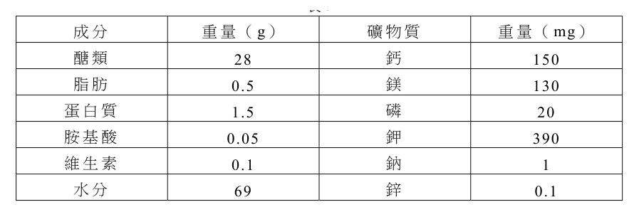
（A） 濾紙層析法（B） 蒸餾法（C） 過濾法（D） 沉澱法（E） 萃取法答案：（C）（D）
詳解與考點 正解：題幹問實驗步驟所包含的分離方法，關鍵是辨認「以濾紙分離固液」與「加入試劑析出固體」。C：步驟4以濾紙濾除不溶物或收集沉澱、步驟5以濾紙收集沉澱物，都是固液分離的過濾法，C 正確。D：步驟4加入 NH4ClO4 使 KClO4 析出沉澱，是利用溶解度差異的沉澱分離，D 正確。
A：濾紙層析法用於分離色素或其他混合成分，題示步驟未使成分在濾紙上展開分離。
B：蒸餾法依沸點差異分離液體，題示步驟未見加熱冷凝收集餾出液。
E：萃取法以溶劑選擇性溶出成分，題示步驟未使用此操作。
本題考點：實驗操作辨識——濾紙分離不溶固體與液體是過濾；加入試劑使目標物析出固體是沉澱法；分離法判準——依操作現象辨別，不可因出現濾紙就誤判為層析。
第 26 題（多選）
下列相關敘述，哪些選項正確？（應選 3 項）
（A） 香蕉成分中的醣類、脂肪、蛋白質、胺基酸均屬於有機化合物（B） 步驟 2 中，將礦物質變成碳酸鹽的目的，是希望去除鈣離子與鎂離子（C） 步驟 4 中選用 NH ClO ，可有效分離鈉離子與鉀離子 4 4（D） 步驟 4 中的 NH ClO ，可使用 (NH ) SO 來替代 4 4 4 2 4（E） 步驟 5 的沉澱物主要是 NaClO 4答案：（A）（B）（C）
詳解與考點 正解：題幹須依有機物定義與表 6 的溶解度，判斷燃燒後的分離效果。A：醣類、脂肪、蛋白質與胺基酸皆含碳骨架，屬有機化合物，正確。B：燃燒後鈣、鎂形成碳酸鹽；表 6 顯示 Ca2+、Mg2+ 的碳酸鹽溶解度均小於 0.01 g／100 g 水，加水後留在不溶物中被濾除，故可去除鈣、鎂離子，正確。C：加入 NH4ClO4 後，KClO4 溶解度僅 1.3 g／100 g 水而沉澱，NaClO4 溶解度為 105 g／100 g 水仍溶於水，可有效分離鈉、鉀離子，正確。
D：若改用 (NH4)2SO4，K2SO4 溶解度為 130 g／100 g 水，鉀離子不會有效沉澱，不能替代。
E：沉澱主成分是溶解度最低的 KClO4，不是溶解度高的 NaClO4。
本題考點：有機化合物辨識——醣類、脂肪、蛋白質與胺基酸皆具碳骨架；溶解度分離——選使目標離子鹽類低溶解度、雜質鹽類高溶解度的陰離子；沉澱判準——溶解度越低，越容易優先形成沉澱。
第 27 題（多選）
在步驟 5 中的反應，下列相關敘述，哪些正確？（應選 3 項）
（A） 此反應可能產生氣體而導致步驟 5 中的重量減少（B） 此反應中 Cl 被還原（C） 此反應產生 KClO（D） 此反應中，1 莫耳的反應物分解產生 1 莫耳的氧氣（E） 平衡反應式的最小整數係數和為 4答案：（A）（B）（E）
詳解與考點 正解：步驟5為高氯酸鉀受熱分解，反應式為KClO4→KCl+2O2；據此判斷氣體、氧化數、莫耳數與係數。A：反應產生O2氣體，氣體逸散會使量測到的固體重量減少，正確。B：KClO4中Cl的氧化數為+7，KCl中Cl為−1；氧化數由+7降至−1，Cl被還原，正確。E：KClO4→KCl+2O2的最小整數係數為1、1、2，係數和=1+1+2=4，正確。
C：反應產物是KCl與O2，不產生KClO，錯誤。
D：由KClO4→KCl+2O2可知，1莫耳KClO4分解產生2莫耳O2，不是1莫耳，錯誤。它看起來對，是因為KClO4與KCl的係數同為1，容易誤把氧氣係數也當成1。
本題考點：熱分解反應式——先配平再讀取物質與莫耳比；氧化還原判準——氧化數降低即被還原；質量變化判準——產生並逸散的氣體會使固體樣品重量減少。
第 28 題
為了探討有絲分裂的現象，學生們觀察洋蔥根尖的切片。他們將已進入細胞分裂階段的細胞歸納如選項 (A)～(E) 所示之五個典型的樣態，並以此五個樣態依序代表細胞分裂階段中的五個進程。依推論，下列哪一進程最早形成 2 倍量的 DNA？
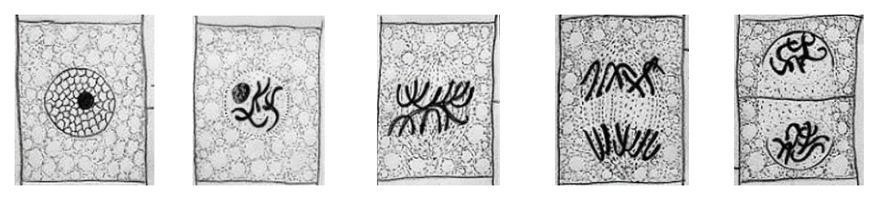
本題選項為上圖中的 A／B／C／D，請對照圖片作答。
答案：（A）
詳解與考點 正解：官方答案為 A；惟本筆未收錄五個細胞樣態圖及完整的 A～E 標示，以下時序依原附圖判讀。題眼句為「DNA 在分裂間期 S 期完成複製，先找進入分裂期後最早的樣態」。S 期完成後，細胞的 DNA 已成為 2 倍量，隨後才依序進入前期、中期、後期與末期。依原附圖，A 是五個樣態中最早的分裂前期，最接近 S 期剛結束的狀態，故 A 為正解。
B：依原附圖，B 的進程雖仍有 2 倍量 DNA，但已晚於 A，不能回答「最早形成」。
C：依原附圖，C 的進程雖仍有 2 倍量 DNA，但 DNA 在進入可見分裂階段前已完成複製，故不是最早。
D：依原附圖，D 到末期前 DNA 仍在分配，時間晚於 A；細胞質分裂完成後，每個子細胞才各回到 1 倍量，故 D 錯誤。它看起來對，是因為末期可清楚看見兩組染色體，卻忽略題目問的是形成 2 倍量的最早時間。
E：依原附圖，E 為更後段的進程，晚於 DNA 複製完成，不能是最早具有 2 倍量 DNA 的樣態。
本題考點：細胞週期與有絲分裂——DNA 複製在分裂間期 S 期完成，進入前期時細胞已具 2 倍量 DNA；時序判準——比較分裂樣態時，先依前期、中期、後期、末期排序，再選最早符合條件者。
第 29 題
將正常光照下生長的豆苗移入黑暗處，若仍然存活且未發生凋萎現象，則豆苗生理變化的敘述，何者最合理？
（A） 呼吸作用停止，細胞中葡萄糖分解產生丙酮酸（B） 呼吸作用逐漸下降，細胞中的乳酸因而累積（C） 呼吸作用受到抑制，細胞中的酒精因而累積（D） 光反應停止，細胞內醣類因能量需求減少而累積（E） 固碳反應停止，細胞為維持適當機能而分解醣類答案：（E）
詳解與考點 正解：豆苗移入黑暗但仍存活且未凋萎，關鍵是光合作用停止而細胞仍須以呼吸作用供能。E：黑暗使固碳反應停止，細胞為維持適當機能會分解既有醣類，故 E 為正解。
A：黑暗中呼吸作用仍持續，細胞仍可分解葡萄糖產生丙酮酸，不能說呼吸作用停止，錯誤。
B：植物在正常有氧狀態下不會因黑暗而累積乳酸；乳酸主要是動物缺氧時的代謝產物，錯誤。
C：黑暗不會使正常呼吸作用受抑制，植物無氧代謝才會主要產生酒精，錯誤。
D：光反應停止後醣類不再合成，但細胞仍有能量需求而持續分解醣類，不會累積，錯誤。它看起來對，是因為光合作用停止似乎代表能量需求降低，實際上細胞的生命活動仍需持續消耗能量。
本題考點：黑暗下的植物代謝——光反應與固碳反應停止，光合作用不再合成醣類；呼吸作用判準——有氧且存活的細胞仍分解醣類供能，不因黑暗而停止；無氧產物區分——植物無氧代謝主要產酒精，乳酸常見於動物缺氧代謝。
第 30 題
研究生物體的細部結構，有賴顯微鏡製作技術的發展。十九世紀前後的科學家們，用逐步改良的顯微鏡觀察生物體的內部結構後，歸納出細胞學說。有關細胞學說的形成，下列歷史性敘述何者正確？
（A） 虎克觀察軟木塞發現細胞膜，是形成細胞學說的主要基礎（B） 雷文霍克改良顯微鏡，將細胞細部結構整理發表為《微物圖誌》（C） 布朗在細胞學說大體上被確立後，進一步發現動物細胞內的細胞核（D） 許來登觀察動物組織後，推論動物體由細胞及其產物所構成（E） 魏修研究細胞的生長後，認為所有的細胞都由既存的細胞產生答案：（E）
詳解與考點 正解：題幹問細胞學說形成的正確歷史敘述，關鍵是魏修在 1855 年提出 Omnis cellula e cellula，意為「所有細胞皆由既有細胞分裂而來」，這是細胞學說第三要點的確立。E 正確敘述魏修研究細胞生長後的主張，故 E 為正解。
A：虎克觀察軟木塞所見的是細胞壁形成的空腔，不是細胞膜；此觀察也不是細胞學說形成的唯一主要基礎，A 錯誤。
B：雷文霍克改良顯微鏡並觀察到活細菌等微生物，但《微物圖誌》是虎克所著，不是雷文霍克，B 錯誤。它看起來對，是因為兩人都與早期顯微鏡觀察有關，容易把觀察成果與著作混為一談。
C：布朗發現細胞核是在細胞學說大體確立之前，C 錯誤。
D：許來登觀察的是植物組織；推論動物體由細胞及其產物構成的是許旺，D 錯誤。
本題考點：細胞學說歷史——魏修提出所有細胞來自既有細胞，補足細胞學說的重要要點；科學史人物辨析——虎克著《微物圖誌》並觀察軟木塞，雷文霍克觀察微生物，許來登研究植物、許旺研究動物，須將人物與成果一一對應。
第 31 題（多選）
人類 ABO 血型的遺傳現象可用孟德爾遺傳法則解釋。某家族三代 ABO 血型的關係，除與未知外，其餘成員的血型皆已填入譜系圖中， X Y 如圖 10 所示。若依法則，並以（X、Y）組合填入此二成員的基因型，則下列哪些合理？（應選項） 2
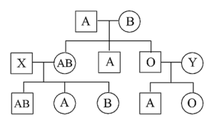
（A） （ IAi、 IAi）（B） （ IAIA、i i）（C） （ IBi、 IAi）（D） （ IBi 、i i）圖10（E） （ i i 、 IAi）答案：（A）（C）
詳解與考點 正解：題幹須由譜系中已知子代血型反推 X、Y 能提供的 IA、IB、i 等位基因，並檢驗與配偶、子女是否相容。A：X、Y 同為 IAi 時，可在相鄰婚配中提供圖示所需的 IA 與 i，並能配合產生 AB、A、B、O 等子代血型，合理。C：IBi、IAi 的組合可由 IB×IA 產生 AB 型子代，且雙方皆有 i，可產生 O 型子代，亦與譜系相容，故 A、C 為正解。
B：IAIA 不含 i，無法配合譜系中須出現 O 型或帶 i 基因型子代的條件，B 錯誤。
D：IBi、ii 的配置會使對應子代血型與其配偶組合無法相容，D 錯誤。
E：ii、IAi 的配置同樣會使對應子代出現不該有的血型，與譜系矛盾，E 錯誤。
本題考點：ABO 血型遺傳——IA、IB 共顯性，i 為隱性；O 型必為 ii，故出現 O 型子代時雙親都必須提供 i；先以子代倒推雙親可提供的等位基因，再逐組檢驗。
第 32 題（多選）
ATP 是真核細胞運作的重要分子，有關此分子，下列哪些正確？（應選 2 項）
（A） 由核糖、嘧啶及三個磷酸基相連而成（B） 組成其分子之一的嘌呤為鳥糞嘌呤（C） 可由細胞質中的粒線體產生（D） 是細胞代謝的主要能量來源（E） 水解後會吸收能量而抑制細胞生長答案：（C）（D）
詳解與考點 正解：題幹問 ATP 的結構與功能，須分別辨認其產生場所及水解的能量意義。C：粒線體位於真核細胞的細胞質中，能經氧化磷酸化產生 ATP，C 正確。D：ATP 水解為 ADP+Pi 時釋放能量，是細胞代謝的主要能量貨幣，D 正確。
A：ATP 由核糖、腺嘌呤與 3 個磷酸基組成；腺嘌呤屬嘌呤，不是嘧啶，A 錯誤。
B：ATP 所含的嘌呤是腺嘌呤，不是鳥糞嘌呤；GTP 才含鳥糞嘌呤，B 錯誤。
E：ATP 水解為放能反應，ΔG<0，釋出的能量有助於細胞活動，非吸收能量或抑制細胞生長，E 錯誤。
本題考點：ATP 結構——三磷酸腺苷由腺嘌呤、核糖與 3 個磷酸基組成；ATP 功能——水解為 ADP+Pi 時放能，供應細胞代謝；真核細胞產能場所——粒線體是氧化磷酸化產生 ATP 的主要場所。
第 33 題
在粗萃取奇異果 DNA 的實驗中，以果汁機打碎果實，依序加入清潔劑、食鹽水和新鮮鳳梨汁，分別攪拌之。接著，以過濾法去雜質，加酒精於濾液中。最後，濾液和酒精的交界處會出現含 DNA 的棉絮狀物質。若對此棉絮狀物質做後續處理，則理論上何者正確？
（A） 經染色後會緊密纏繞成棍棒狀，呈現類似在細胞內的染色體樣態（B） 經水解處理後會產生核苷酸（C） 加入胺基酸並水浴於 35 ℃會產生蛋白質（D） 置於生理食鹽水中會產生 RNA（E） 與草莓萃取的 DNA 混合會形成完全互補之雙股 DNA答案：（B）
詳解與考點 正解：棉絮狀物質的主要成分是 DNA；DNA 經水解會由大分子分解為核苷酸，故 B 為正解。
A：DNA 在體外不會自行緊密纏繞成細胞內的染色體；染色體形成尚需組蛋白複合體與細胞週期調控，錯誤。
C：加入胺基酸並在 35 ℃ 水浴，不能自行合成蛋白質；蛋白質合成需要核糖體、mRNA、tRNA 與酵素，錯誤。
D：DNA 置於生理食鹽水不會自發產生 RNA；RNA 合成需轉錄酵素與 DNA 模板，錯誤。
E：奇異果與草莓 DNA 序列不同，混合後不會形成完全互補的雙股 DNA，錯誤。
本題考點：DNA 組成——DNA 水解後可得核苷酸；生物合成條件——蛋白質合成與 RNA 轉錄都需特定細胞機制，不會因單純混合或加熱自發完成。
第 34 題
古生物學家舍科斯基（Sepkoski）教授將海洋生物化石多樣性歸納為三個動物相。以科為單位，他列舉了地球寒奧志泥石二三侏白新生命史上的五次大滅絕武陶留盆炭疊疊羅堊生紀紀紀紀紀紀紀紀紀代如圖 11 之數字 1～5 所示。 800 海依其歸納及後來的科學發展，洋下列敘述何者正確？生 600 物
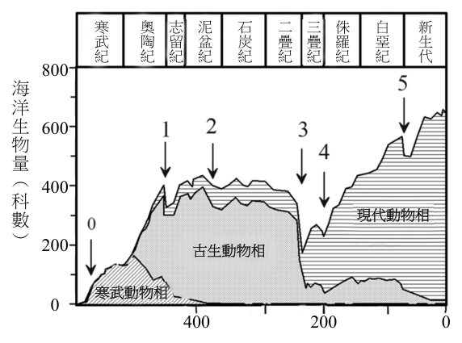
（A） 寒武紀大爆發之後，量奧陶紀加速形成了古生 ︵ 400 科動物相數現代動物相（B） 第 1 次大滅絕之後， ︶ 200 古生動物相古生代的海洋生物科幾乎消失殆盡寒武動物相 0 400 200 0（C） 第 3 次大滅絕之後，時間（百萬年前）中生代的物種不再出現圖11 於新生代（D） 侏羅紀將結束之時，恐龍類群的物種大量從地球消失（E） 地球生命史上生物多樣性的高低，僅由滅絕速率的高低所決定答案：（A）
詳解與考點 正解：圖 11 的題眼是寒武紀大爆發後至奧陶紀，古生代動物相的海洋生物科數明顯加速增加；古生代動物相在奧陶紀擴張並取代早期寒武動物相成為主導，故 A 為正解。
B：第 1 次大滅絕後，古生代海洋生物科並未消失殆盡；圖中曲線其後仍維持並繁盛，B 錯誤。
C：第 3 次大滅絕在二疊紀末，中生代仍有許多類群延續到新生代，不能說中生代物種不再出現於新生代，C 錯誤。
D：恐龍類群大量滅絕發生在白堊紀末的第 5 次大滅絕，不是侏羅紀結束時，D 錯誤。它看起來對，是因為恐龍確在中生代末期大滅絕，但侏羅紀與白堊紀末不可混同。
E：生物多樣性的高低同時受新類群形成速率與滅絕速率影響，不能僅由滅絕速率決定，E 錯誤。
本題考點：生命史三大動物相——依圖中各動物相的科數變化判讀其興衰；生物多樣性判準——多樣性由新生與滅絕共同決定，判讀大滅絕時須對應正確地質年代。
第 35 題（多選）待校
有關共同祖先的概念及演化證據對生物分類系統之影響，下列敘述哪些正確？（應選 2 項）
（A） 以二名法為新物種命名，是根據共同祖先的概念而進行的方法（B） 因為無法決定病毒的分類地位，生物分類將二界分類系統擴增為三界及分子的突變率太高，不適合運用於推論分類單元間的共同祖先（C） DNA RNA（D） 由於有一些不具細胞核的單細胞生物體，故原核生物界從原生生物界劃分出來（E） 真核生物具有 DNA 位於核膜內的特徵，說明他們有一個不為古菌域所擁有的共同祖先答案：（D）（E）
詳解與考點 正解：題幹問共同祖先與演化證據如何影響分類系統，關鍵在分類是否反映共享衍徵與親緣關係。D：部分單細胞生物不具細胞核，與具細胞核的原生生物不同，原核生物因而自原生生物界劃分出來，正確。E：真核生物共有 DNA 位於核膜包覆的細胞核內此一特徵，可支持其具有不為古菌域所擁有的共同祖先，正確，故正解為 D、E。
A：二名法是林奈建立的命名制度，早於以共同祖先解釋分類的演化觀點；命名格式本身不是依共同祖先概念設計，A 錯誤。
B：依原題選項，分類系統由二界擴增為三界及更多界，重點在新發現的生物特徵與親緣關係，不能歸因於無法決定病毒的分類地位，B 錯誤。
C：依原題選項，DNA、RNA 的突變率雖有差異，仍可配合分子鐘等方法推論分類單元間的共同祖先，不能因此說不適合，C 錯誤。它看起來對，是因為突變率差異確實會影響估算方式；但需要校正不等於不能作為演化證據。
本題考點：演化分類——分類系統以共享衍徵與共同祖先反映親緣關係，細胞核可作為真核生物的共享特徵；分子演化證據——DNA、RNA 序列可用於推論親緣，須考慮突變率而非直接排除。
第 36 題待校
分子生物學發達前，圖 12 表示現生四足類合理的親緣關係之一。科學家在侏羅紀的地層發現一塊恐龍之長骨，並從骨腔中採樣。假設此採樣可獲得約 200 個鹼基對的 DNA 序列，若將此序列與現生生物之序列比對並推論之，則該恐龍最可能插入圖中的哪一分支，形成新的節點？
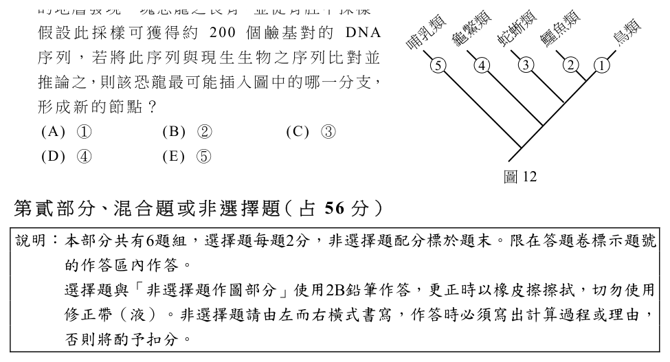
（A） ④（B） ②（C） ③（D） ①答案：（A）
詳解與考點 正解：題幹的關鍵是以 DNA 序列差異推論親緣，序列差異越小表示共同祖先越近。恐龍與鳥類同屬主龍類，與鳥類的親緣最近；依圖 12 的分支標示，新節點應插入④分支，故 A 正確。
B：②分支所對應的現生類群雖與恐龍同為爬行類系統，但親緣不如鳥類接近。它看起來合理，是因為鱷魚類也屬主龍類；但比較 DNA 序列時，應選與恐龍共同祖先更近的鳥類支系。
C：③分支的蛇蜥類與恐龍親緣較遠，預期 DNA 序列差異較大。
D：①分支所代表的類群與恐龍親緣更遠，不會是最可能形成新節點的位置。
本題考點：分子親緣分析——DNA 序列差異越小，共同祖先越近；把化石生物放入支序圖時，選與其最近現生類群共用祖先的分支。
巴西龜（Trachemys scripta）的性別是由受精卵孵化時的環境溫度所決定。將卵置於 26 ℃，性別決定基因 Dmrt1 會表現出來，胚胎發育為雄性。將卵置於 32 ℃，Dmrt1 基因不會表現，胚胎發育為雌性。進一步的研究發現，Kdm6b 基因會影響 Dmrt1 基因的表現與否，即 Kdm6b 蛋白質的量相對較高時，會促進 Dmrt1 基因表現 RNA，進而產生更多的 Dmrt1 蛋白質。在 26 ℃時，Kdm6b 蛋白質的表現量相對較高，於是活化 Dmrt1 基因。在 32 ℃時，Kdm6b 蛋白質的表現量相對低，使得 Dmrt1 基因幾乎不表現。
第 37 題（多選）
關於 Dmrt1 與 Kdm6b 兩基因的敘述或推論，下列哪些正確？（應選 3 項）
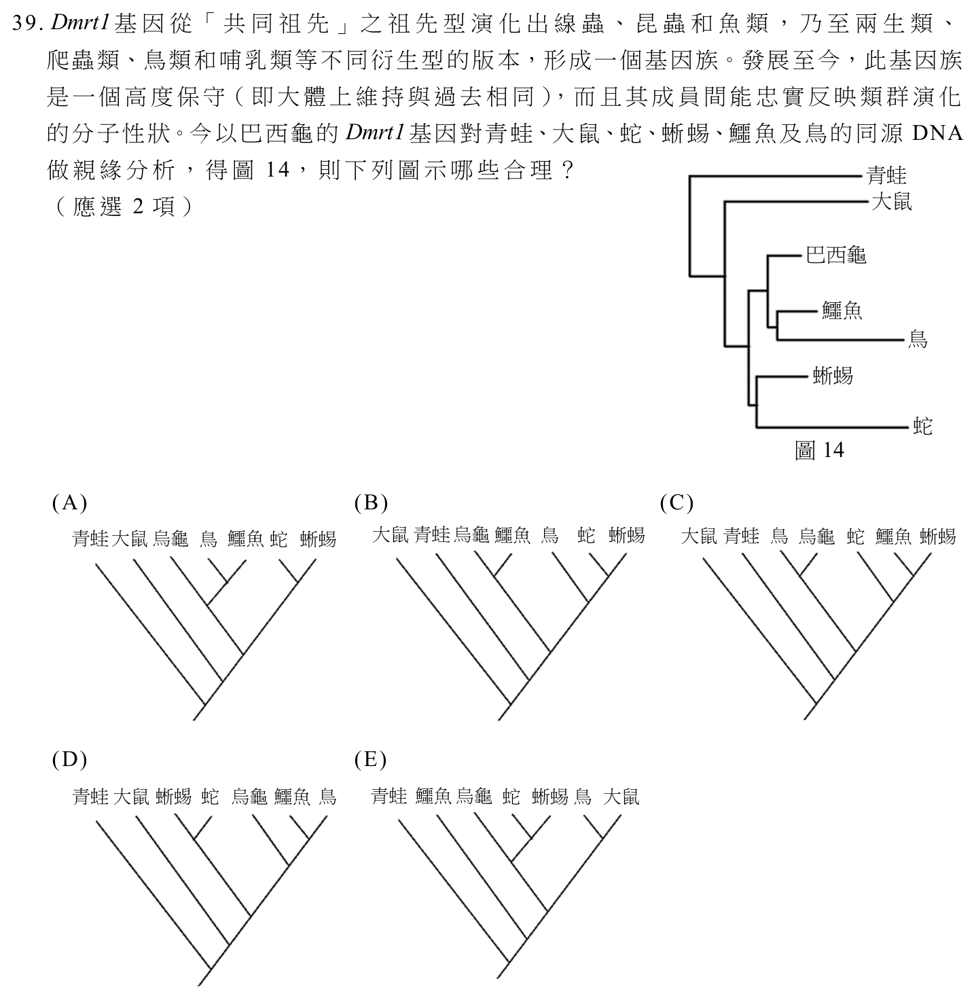
（A） Dmrt1 基因存在於雄性巴西龜，雌性則沒有（B） Dmrt1 蛋白質可能會促進雄性性器官的發育（C） Dmrt1 基因在細胞核中進行轉錄，Kdm6b 基因在細胞質中進行轉錄（D） Kdm6b 基因與 Dmrt1 基因轉錄後，都在細胞質中進行轉譯（E） Kdm6b 蛋白質會在細胞核中幫助 Dmrt1 基因的轉錄答案：（B）（D）（E）
詳解與考點 正解：題幹指出 26 ℃時 Dmrt1 表現而胚胎發育為雄性，且 Kdm6b 蛋白質會促進 Dmrt1 的 RNA 表現。B：Dmrt1 蛋白質可能促進雄性性器官發育，符合表現與雄性發育的關聯。D：兩基因轉錄出的 RNA 都在細胞質核糖體進行轉譯，正確。E：Kdm6b 協助 Dmrt1 基因轉錄，而真核轉錄在細胞核，故其蛋白質須在細胞核中作用，正確。
A：雌雄巴西龜屬同一物種，皆有 Dmrt1 基因；32 ℃時是不表現，不是沒有此基因。
C：真核生物的基因轉錄都在細胞核，Kdm6b 不會在細胞質轉錄。
本題考點：基因表現——同一基因是否表現可受環境與調控蛋白影響，不能把「不表現」誤作「沒有基因」；真核細胞的轉錄在細胞核、轉譯在細胞質核糖體；由表現結果推論蛋白功能時，須回扣發育表型。
第 38 題
將文本的研究發現歸納總結，可用示意圖 13 表示。 32℃ Dmrt1 雌龜 Kdm6b Dmrt1 雄龜 26℃ 圖13 （a）因此，可推論在 26 ℃孵化的巴西龜受精卵，若在適當時間點對其胚胎注射抑制 Kdm6b基因表現的藥物，則此幼龜的性別為何？（2 分）（b）承（a）題，相較於未經藥物處理的 26 ℃孵化胚胎，此胚胎中 Dmrt1基因及 Kdm6b基因的表現量變化為何（20 字以內）？（2 分）
本題選項為上圖中的 A／B／C／D，請對照圖片作答。
標準答案未收錄
詳解與考點 參考方向：依文本因果鏈 Kdm6b→活化 Dmrt1→發育為雄性。(a) 在 26 ℃適當時間點注射抑制 Kdm6b 表現的藥物，Kdm6b 蛋白質下降，無法活化 Dmrt1，結果如同 32 ℃，故此幼龜性別應為「雌性」。(b) 相較未處理的 26 ℃胚胎，藥物直接抑制 Kdm6b 基因→Kdm6b 表現量下降；Kdm6b 下降使其無法促進 Dmrt1 轉錄→Dmrt1 表現量也下降。可答「Kdm6b 與 Dmrt1 表現量皆下降（減少）」。此為 AI 整理之解題方向，非官方標準答案，須對照官方評分原則。
第 39 題（多選）
Dmrt1 基因從「共同祖先」之祖先型演化出線蟲、昆蟲和魚類，乃至兩生類、爬蟲類、鳥類和哺乳類等不同衍生型的版本，形成一個基因族。發展至今，此基因族是一個高度保守（即大體上維持與過去相同），而且其成員間能忠實反映類群演化的分子性狀。今以巴西龜的 Dmrt1 基因對青蛙、大鼠、蛇、蜥蜴、鱷魚及鳥的同源 DNA 做親緣分析，得圖 14，則下列圖示哪些合理？（應選 2 項）
本題選項為上圖中的 A／B／C／D，請對照圖片作答。
答案：（A）（D）
詳解與考點 正解：題幹已給 Dmrt1 基因高度保守且能忠實反映類群演化，判讀親緣樹須檢查拓樸而非枝條排列。A、D：兩圖都呈現鱷魚與鳥為較近的姊妹群，龜鱉接於其外，蛇、蜥蜴再外；大鼠與青蛙位於該爬蟲支系之外，符合已知演化關係，故 A、D 為正解。
B：鳥與龜鱉的分群關係不符鱷魚與鳥較近的主龍類關係。
C：將鱷魚的親緣位置錯置，未呈現其與鳥的較近共同祖先。
E：把青蛙、鱷魚、龜鱉與鳥的分支關係排錯，無法反映兩生類與羊膜動物、主龍類的親緣層次。
本題考點：親緣樹判讀——比較分支的共同祖先，不以圖上左右位置判親疏；分子性狀若高度保守且可反映演化，親緣樹應呈現鳥與鱷魚較近、龜鱉接其外、兩生類與哺乳類為較外支的拓樸。
植物的花蜜富含香氣，可吸引某些鳥類前來取食。鳥類吸取花蜜之時，身體會接觸到花蕊與花粉，間接幫助植物授粉及繁衍後代。研究發現某野生菸草，其花蜜的主要成分為具香氣的苄丙酮與具毒性的尼古丁，兩者結構式如圖 15。為了探究這兩種成分對蜂鳥取食花蜜及對菸草繁衍的影響，研究者創造了花蜜中只含苄丙酮、只含尼古丁、以及兩者都缺乏的三型基改菸草。苄丙酮尼古丁圖15 然後，將這三型基改菸草與野生型菸草分別種植在不同樣區，於菸草開花期間同步記錄各區每天受蜂鳥到訪的花朵數目（圖 16 甲）、蜂鳥在每朵花停留時間的平均值（圖 16 乙）、果實之成熟率（圖 16 丙）與花朵中花蜜剩餘的體積（圖 16 丁）。圖之甲～丁橫軸為花蜜中含苄丙酮及尼古丁的狀態，如表的說明。依據 16 7 圖文資料，回答 40～43 題。（甲）（乙）每 2.0 55 平天均 1.8 表7 受 50 停訪留 1.6 花 45 時圖示狀態朵間 1.4 數 40 ︵ ︵ 秒 +/+ 含苄丙酮及尼古丁朵 35 1.2 ︶ ︶ 30 1.0 +/‒ 含苄丙酮，但無尼古丁 +/+ +/‒ ‒/+ ‒/‒ +/+ +/‒ ‒/+ ‒/‒ ‒/+ 無苄丙酮，但含尼古丁不含苄丙酮與尼古丁 ‒/‒ （丙）（丁） 1.6 40 花 1.4 果 35 蜜 1.2 實 30 剩餘 1.0 成 25 熟體 20 積 0.8 率 15 ︵ 0.6 ︵ 10 微 0.4 % 升 0.2 ︶ 5 ︶ 0 0.0 +/+ +/‒ ‒/+ ‒/‒ +/+ +/‒ ‒/+ ‒/‒ 圖16
第 40 題
根據圖 16 的結果，相較於野生型菸草，下列敘述何者錯誤？
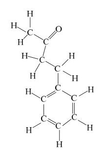
（A） 不含尼古丁的花朵每天被蜂鳥到訪的數量較少（B） 缺乏苄丙酮或尼古丁及兩者都缺乏的花朵，蜂鳥停留時間變長（C） 花蜜不含尼古丁的基改型果實成熟率較低（D） 花蜜中只有苄丙酮的基改型被取食的量較多（E） 本結果已達成基改使果實成熟率提升的目的答案：（E）
詳解與考點 正解：題幹問「相較於野生型菸草」何者錯誤，須以圖16丙比較各型果實成熟率。E：野生型+/+的成熟率約35%，為最高；三型基改菸草+/−、−/+、−/−皆約12～14%，基改後不升反降，未達成提升果實成熟率的目的，故E錯誤。
A：圖16甲顯示不含尼古丁的+/−、−/−，每天受蜂鳥到訪的花朵數較少，正確。
B：圖16乙顯示只要缺乏苄丙酮或尼古丁，或兩者皆缺乏，蜂鳥在每朵花的平均停留時間都較野生型長，正確。
C：圖16丙顯示不含尼古丁的+/−、−/−果實成熟率較低，正確。
D：圖16丁中只有苄丙酮的+/−花蜜剩餘體積最少，表示被取食量最多，正確。它看起來不易判斷，是因為圖丁呈現的是「剩餘量」，必須反向推得取食量。
本題考點：實驗圖表判讀——先確認橫軸的基因型與成分，再以對照組+/+比較；剩餘量判準——花蜜剩餘體積愈少，表示被取食量愈多；否定題判準——四項符合圖表時，找與圖表趨勢相反的一項。
第 41 題
根據圖 16 結果，顯示苄丙酮與尼古丁對蜂鳥吸食花蜜有不同的影響，試推論其影響並說明推論理由。（4 分）（於答題卷作答）對蜂鳥吸食花蜜的影響說明理由（勾選） □ 抑制蜂鳥吸食花蜜只有苄丙酮者，花蜜剩餘較少。苄丙酮 □ 吸引蜂鳥吸食花蜜（1 分）（範例） □ 抑制蜂鳥吸食花蜜尼古丁（2 分） □ 吸引蜂鳥吸食花蜜（1 分）
本題選項為上圖中的 A／B／C／D，請對照圖片作答。
標準答案未收錄
詳解與考點 參考方向：由圖 16 丁「花蜜剩餘體積」推論取食量（剩越少代表被吃越多）。苄丙酮：比較 +/− 與 −/−，只含苄丙酮（+/−）花蜜剩餘最少，代表被取食最多→苄丙酮「吸引」蜂鳥吸食花蜜。尼古丁：比較 −/+ 與 −/−，無苄丙酮但含尼古丁（−/+）花蜜剩餘最多，代表被取食最少→尼古丁「抑制」蜂鳥吸食花蜜。故苄丙酮吸引、尼古丁抑制。此為 AI 整理之解題方向，非官方標準答案，須對照官方評分原則。
第 42 題
（a）寫出苄丙酮的分子式。（2 分）（b）試在答題卷作答區中的尼古丁結構式，畫出其孤對電子。（2 分）
本題選項為上圖中的 A／B／C／D，請對照圖片作答。
標準答案未收錄
詳解與考點 參考方向：(a) 苄丙酮（benzylacetone）結構為苯環—CH2—CH2—C(=O)—CH3。碳數：苯環 6＋側鏈 4＝10 個 C；氫數：苯環 5＋兩個 CH2 共 4＋甲基 3＝12 個 H；氧 1 個，故分子式為 C10H12O。(b) 尼古丁含吡啶環的 N 與吡咯烷環的 N 各一，兩個氮原子皆為三鍵結（接 3 個鍵），各保留 1 對孤對電子，故在兩個 N 上各畫一對孤對電子（共 2 對）。此為 AI 整理之解題方向，非官方標準答案，須對照官方評分原則。
第 43 題
有關苄丙酮與尼古丁的分子結構與性質之敘述，下列何者正確？
（A） 苄丙酮與尼古丁互為同分異構物（B） 等重的苄丙酮與尼古丁完全燃燒會產生相同莫耳數的二氧化碳（C） 苄丙酮與尼古丁分子中含有相同數目的 C−H 鍵（D） 苄丙酮與尼古丁分子中的所有原子均有 8 個價電子（E） 苄丙酮與尼古丁分子有相同數目孤對電子答案：（E）
詳解與考點 正解：苄丙酮為 C10H12O，尼古丁為 C10H14N2；題幹要比較分子結構時，先由路易斯結構計算孤對電子。E：苄丙酮中的 O 有2對孤對電子；尼古丁的2個 N 各有1對孤對電子，共2對，兩者孤對電子數相同，故 E 為正解。
A：同分異構物必須分子式相同；兩者分子式不同，不互為同分異構物，A 錯誤。
B：兩者每分子雖都含10個 C，但等重樣品的莫耳數因分子量不同而不同，完全燃燒產生的 CO2 莫耳數不同，B 錯誤。
C：苄丙酮有12個 H、尼古丁有14個 H，C−H 鍵數不相同，C 錯誤。
D：H 原子僅有2個價電子的穩定組態，不能說分子中所有原子均有8個價電子，D 錯誤。
本題考點：分子式與路易斯結構——同分異構物必須分子式相同；等重物質的莫耳數要用分子量判斷；計算孤對電子時，O 通常有2對、胺類 N 通常有1對。
在 2023 年，諾貝爾化學獎頒給從事奈米級量子點研究的三位學者。量子點是直徑介於 1 至 10 奈米的奈米粒子，由於其微小尺寸，可表現出獨特的性質。量子點的合成，可藉由添加不同界面活性劑等方法，來控制其大小及成分。硫化鋅量子點的合成實驗步驟如下：步驟 1.配製甲與乙兩溶液，其組成如下：甲：0.25 M 半胱胺酸（胺基酸的一種）＋ 0.125 M ZnSO 4 乙： 0.125 M Na S 2 步驟 2.將甲和乙溶液混合後，於 47 ℃反應 60 分鐘，然後使用 1 M 醋酸鈉溶液，調整值至 6。 pH 步驟 3.將冰冷乙醇逐滴加入，直至生成含有 ZnS 的白色沉澱物（稱為乙醇沉澱）。步驟 4.經過 10 分鐘的離心後，取出沉澱物重新懸浮於水溶液中。步驟 5.為去除大部分未反應的成分，需要進行至少兩次以上 3～4 步驟。表 8 顯示不同比例反應物及所得產物的鋅離子、硫離子含量及量子點的產率。表8 反應物產物樣 ZnSO Na S 半胱胺酸 Zn2+ S2- 量子點的 4 2 品（10-6莫耳）（10-6莫耳）（10-6莫耳）（10-6莫耳）（10-6莫耳）產率（%） 1 200 50 400 7.2 9.4 18.1 2 200 100 400 37.6 46.5
第 44 題（多選）
關於硫化鋅量子點合成實驗的敘述，下列哪些正確？（應選2 項）
表8 樣 品 反應物 產物 ZnSO 4 （106莫耳） Na S 2 （106莫耳） 半胱胺酸 （106莫耳） Zn2+ （106莫耳） S2 （106莫耳） 量子點的 產率（%） 1 200 50 400 7.2 9.4 18.1 2 200 100 400 37.6 46.5 44.7 3 200 150 400 62.4 69.3 44.4 4 200 200 400 88.0 88.0 44.0 5 200 300 400 93.6 108.8 45.5 6 200 400 400 104.6 117.0 50.2
（A） 反應中添加半胱胺酸，可幫助硫化鋅量子點分散在水中（B） 反應後的混合溶液，使用雷射光筆照射，可看到光束（C） 產物硫化鋅易溶於水，屬於分子化合物（D） 合成實驗時，會出現一種刺鼻的味道，是硫化鋅的氣味（E） 合成實驗時，添加冰冷的乙醇，可增加硫化鋅奈米粒子的溶解度答案：（A）（B）
詳解與考點 正解：題幹指出半胱胺酸可作界面活性劑控制量子點，且產物重新懸浮於水；奈米粒子分散形成膠體時可用丁達爾效應辨識。A：半胱胺酸作為界面活性劑／穩定劑，包覆硫化鋅量子點表面，使奈米粒子能分散懸浮於水中，正確。B：量子點分散於水中形成膠體溶液，雷射光筆照射時會產生丁達爾效應，可看見光束路徑，正確。
C：ZnS 為難溶於水的離子化合物，實驗中以白色沉澱生成，不是易溶的分子化合物。
D：ZnS 是難溶且不揮發的固體，不能把實驗中的刺鼻味認定為硫化鋅本身的氣味；硫化物僅在酸性條件下才可能生成具有臭味的 H2S。
E：加入冰冷乙醇是降低硫化鋅奈米粒子的溶解度，使其沉澱析出；它看起來對，是因為乙醇參與沉澱步驟，但其作用不是增加溶解度。
本題考點：奈米膠體——界面活性劑可穩定奈米粒子分散，膠體受雷射照射會出現丁達爾效應；離子化合物與沉澱——ZnS 難溶於水，加入冰冷乙醇可促進沉澱析出；氣味判準——ZnS 本身是不揮發的固體，不能視為刺鼻味來源。
第 45 題（多選）待校
5 6 200 400 400 104.6 117.0
表8 樣 品 反應物 產物 ZnSO 4 （106莫耳） Na S 2 （106莫耳） 半胱胺酸 （106莫耳） Zn2+ （106莫耳） S2 （106莫耳） 量子點的 產率（%） 1 200 50 400 7.2 9.4 18.1 2 200 100 400 37.6 46.5 44.7 3 200 150 400 62.4 69.3 44.4 4 200 200 400 88.0 88.0 44.0 5 200 300 400 93.6 108.8 45.5 6 200 400 400 104.6 117.0 50.2
（A） 當 \(\mathrm{Na_2S}\) 低於 \(5.0\times10^{-5}\) 莫耳時，硫化鋅量子點的產率低於 20%（B） 當 \(\mathrm{Na_2S}\) 超過 \(1.0\times10^{-4}\) 莫耳時，硫化鋅量子點的產率高於 40%（C） 當 \(\mathrm{Na_2S}\) 過量時，硫化鋅量子點的產率高於 45%（D） 硫化鋅量子點的產率可以達到 100%（E） 硫化鋅量子點的鋅離子/硫離子（\(\mathrm{Zn^{2+}/S^{2-}}\)）比例遠大於 1答案：（A）（B）（C）
詳解與考點 正解：題幹比較 Na2S 用量與硫化鋅量子點產率，須依題組表8的用量與產率趨勢逐項比對。A：Na2S 低於5.0×10^-5莫耳時，表8所示產率低於20%，正確。B：Na2S 超過1.0×10^-4莫耳時，表8所示產率高於40%，正確。C：Na2S 過量時，表8所示產率高於45%，正確。
D：表8的產率未達100%，不能把增加硫源的趨勢推成完全轉化，D 錯誤。它看起來對，是因為 Na2S 增加會提高產率，但產率上升不等於必達100%。
E：表8的鋅離子／硫離子比例並非遠大於1，E 錯誤。
本題考點：表格資料判讀——先將每個選項的 Na2S 門檻對回表8的用量與產率，再判斷不等式是否成立；趨勢增加只能支持表中範圍的結論，不可外推為100%產率或失真的離子比例。
第 46 題
2%。推測原因，應是在加熱過程中發生分解反應。依據上述，回答下列問題。（莫耳質量： NaClO =122.5 g/mol、 KClO =138.5 g/mol、 NaCl=58.5 g/mol、 KCl=74.5 g/mol） 4 4
表8 樣 品 反應物 產物 ZnSO 4 （106莫耳） Na S 2 （106莫耳） 半胱胺酸 （106莫耳） Zn2+ （106莫耳） S2 （106莫耳） 量子點的 產率（%） 1 200 50 400 7.2 9.4 18.1 2 200 100 400 37.6 46.5 44.7 3 200 150 400 62.4 69.3 44.4 4 200 200 400 88.0 88.0 44.0 5 200 300 400 93.6 108.8 45.5 6 200 400 400 104.6 117.0 50.2
標準答案未收錄
詳解與考點 本題題幹經 OCR 後嚴重殘缺：所附段落與表 8 完整呈現的是「硫化鋅（ZnS）量子點」的合成實驗（反應物為 ZnSO4、Na2S、半胱胺酸，產物列出 Zn2+、S2- 含量與量子點產率），步驟 4 為「離心後取出沉澱物重新懸浮於水溶液」，並未出現 NaClO4／KClO4 沉澱、亦無「表 6」、更無「減少 46.2%」之敘述（題幹可見處僅出現殘缺的「2%」）。原解說所述「沉澱物主成分為 KClO4、步驟 4 加 NH4ClO4、依表 6 判斷、失重 (138.5−74.5)/138.5 ≈ 46.2% 恰與題述吻合」整段情境，全屬本題文字無從佐證的捏造，係誤套到另一題（鈉鉀過氯酸鹽沉澱與分解）的情境，與本題之量子點主旨完全不符，計算結論不成立。由於殘存題幹不足以還原本小題真正欲問的內容，且本題為非選擇題、官方未提供制式答案，無法在此給出可靠的完整解答；應改以官方公布之大考中心評分原則為準，並重新取得未殘缺之原始題幹後再行作答。
圖 17 為汞原子的部分能階 \(n\)（\(n = 0, 1, 2, \ldots\)）與其能量 \(E_n\) 的示意圖，並以最高能量 \(E_0 = 0\) eV 為參考能量，其中 1 eV \(= 1.6 \times 10^{-19}\) J，是常用能量單位。例如，晶片製程使用的 365 nm 紫外光（UV），其光子能量為 3.4 eV。晶片先進製程使用的 13.5 nm 極紫外光（EUV），並採用反射鏡來匯聚與引導，如圖 18 所示。然而 EUV 於反射鏡上無法全部被反射，仍會有部分透射與被吸收。圖 19（a）為反射鏡面的局部放大圖，示意以重複的薄膜單元（實線框）加強 EUV 反射效率的機制，圖中的箭號 I 代表一束射入表面的光線，箭號 \(R_1\)、\(R_2\)、\(R_3\)…依序對應於 I 光線從各個薄膜單元界面反射而出的光線。每一個薄膜單元包含兩層，EUV 在快波速介質（白色層）的波速大於在慢波速介質（灰色層）的波速。圖 19（a）薄膜單元內的點線僅供示意 \(R_1\)、\(R_2\)、\(R_3\)…的反射來源，未能精確代表實際光線的反射與折射角度。已知普朗克常數為 \(h = 6.63 \times 10^{-34}\) J·s，真空中光速為 \(c = 3 \times 10^8\) m/s。
第 47 題
關於圖 17 汞原子能階之間的躍遷，下列何者可以發出波長為 365 nm 的 UV 光波？
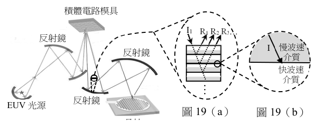
（A） \(E_1 \to E_3\)（B） \(E_1 \to E_4\)（C） \(E_2 \to E_4\)（D） \(E_2 \to E_5\)（E） \(E_3 \to E_4\)答案：（B）
詳解與考點 正解：365 nm 光子的能量可由 E=hc/λ 求得，約為 1240÷365=3.4 eV；再依圖 17 比較各能階差。B：E_4-E_1=5.0-1.6=3.4 eV，與該光子的能量相同，故 B 為正解。
A：依圖 17，E_3-E_1=3.7-1.6=2.1 eV，不是 3.4 eV，錯誤。
C：依圖 17，E_4-E_2=5.0-2.5=2.5 eV，不是 3.4 eV，錯誤。
D：依圖 17，E_5-E_2 的能階差不等於 3.4 eV，錯誤。
E：依圖 17，E_4-E_3=5.0-3.7=1.3 eV，不是 3.4 eV，錯誤。
本題考點：光子能量與能階差——原子躍遷放出的光子能量等於兩能階能量差；比對判準——先由 E=hc/λ 求出 365 nm 對應約 3.4 eV，再依圖 17 逐項計算能階差，找出相等者。
第 48 題（多選）
下列有關波長為 13.5 nm 的 EUV 光子能量 \(E\) 的敘述，哪些正確？（應選 2 項）
（A） \(E = hc/\lambda\)（B） \(E = h/\lambda\)（C） \(E = hc\lambda\)（D） \(E\) 約為 \(1.5 \times 10^{-17}\) J（E） \(E\) 約為 \(5 \times 10^{-44}\) J答案：（A）（D）
詳解與考點 正解：題眼是光子能量與波長的關係，先由 c=fλ 得 f=c/λ，再代入 E=hf。A：E=hc/λ，正確。D：h=6.63×10^-34 J·s，c=3×10^8 m/s，λ=13.5×10^-9 m；E=hc/λ=(6.63×10^-34×3×10^8)/(13.5×10^-9) J=(19.89×10^-26)/(13.5×10^-9) J=1.473×10^-17 J≈1.5×10^-17 J，正確。
B：E=h/λ 少了光速 c，量綱不是能量，錯誤。
C：E=hcλ 把除以波長誤作乘以波長；光子能量應與波長成反比。
E：正確中間值為 1.473×10^-17 J，不是 5×10^-44 J，數量級明顯錯誤。
本題考點：光子能量——由 c=fλ 與 E=hf 推得 E=hc/λ；代入時將 nm 先換成 10^-9 m，並以科學記號逐步檢查數量級。
第 49 題
圖 19（a）示意運用重複的薄膜單元以加強 EUV 反射效率。每一個單元包含兩層，分別為快、慢波速介質。依據上述回答下列各問題。（a）在答題卷對應的方格紙中，依據某時刻 R 的電場與位置關係圖，描繪在 2 相同時刻 EUV 加強反射鍍膜之 R 應有的電場與位置關係圖形，可使疊加後 3 的反射 EUV 達到最大反射效率。（2 分）（b）圖 19（b）的箭號 I 展示一束光線，從慢波速介質射向快波速介質。在答題卷對應的極坐標圖中，以一段箭號精確描繪光線 I 的反射光線（1 分），並以另一段箭號定性描繪光線 I 通過界面的折射光線（須明確表達偏近或偏離界面）。（1 分）… I1 反射鏡 I 慢波速反射鏡介質快波速介質反射鏡圖18
本題選項為上圖中的 A／B／C／D，請對照圖片作答。
標準答案未收錄
詳解與考點 參考方向：（a）薄膜多層膜加強反射屬建設性干涉，R2 與 R3 疊加要最大，兩波須同相；因此 R3 的電場—位置圖須與 R2 同相位、同波長、同振幅（波峰對波峰、波谷對波谷重合），僅依各層光程差 = 半波長整數倍使相位一致。（b）I 由慢波速介質射向快波速介質（疏介質），反射光遵守反射定律，入射角 = 反射角、位於法線另一側；折射光因進入快波速（折射率較小）介質，折射角大於入射角，光線偏離法線（偏離界面法線、較貼近界面）。此為 AI 整理之解題方向，非官方標準答案，須對照官方評分原則。
潮汐對生活有許多影響，例如船舶進出港、水下工程施工、海釣遊憩活動等。為瞭解海岸潮汐型態及預報潮位高低，某港口碼頭邊設置了一個潮汐觀測站。根據潮位儀記錄的水位，減掉水位記錄平均值之後，可得到某星期一中午 12 時至次日 1 時的逐時相對潮汐水位記錄如表 9。表9 時 12 13 14 15 16 17 18 19 20 21 22 23 0 1 潮位 0.0 -0.75 -1.25 -1.5 -1.25 -1.0 -0.5 0.25 1.25 1.75 1.5 1.0 0.25 -0.25 （公尺）潮汐為永續能源。例如圖 20 所示，可在海灣口築堤壩以蓄水儲能於海灣內。漲潮時海水流入海灣，退潮時海水流出海灣，都經過壩底通道，可驅動水車發電機進行發電，假設漲、退潮發電量相同。圖 21 為另一種發電設施，潮汐造成海面升降，經由浮筒與連桿，推拉磁鐵相對於線圈運動，因而產生感應電流。磁海灣內蓄水海灣外海洋海灣口浮筒鐵海面上海面堤壩磁鐵漸低連桿下漸升海水固定架流線圈入線圈水車發電機圖20 圖21
第 50 題
2 44. 關於硫化鋅量子點合成實驗的敘述，下列哪些正確？（應選 2 項）
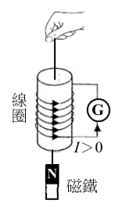
（A） 反應中添加半胱胺酸，可幫助硫化鋅量子點分散在水中（B） 反應後的混合溶液，使用雷射光筆照射，可看到光束（C） 產物硫化鋅易溶於水，屬於分子化合物（D） 合成實驗時，會出現一種刺鼻的味道，是硫化鋅的氣味（E） 合成實驗時，添加冰冷的乙醇，可增加硫化鋅奈米粒子的溶解度標準答案未收錄
詳解與考點 考點：硫化鋅（ZnS）量子點合成實驗的性質判讀（膠體分散、廷得耳效應、離子化合物溶解度、奈米粒子析出）。本題畫面顯示的題幹與五個選項為一道完整、可作答的化學題，應就此作答，不應略過。
逐項判讀：
（A）正確。半胱胺酸（cysteine）分子帶有 −SH、−NH2、−COOH 等官能基，作為包覆配位基（capping ligand），一端與 ZnS 表面鍵結、另一端親水，能使量子點穩定分散在水中，避免聚集沉澱。
（B）正確。ZnS 量子點分散於溶液中形成膠體，以雷射筆照射時，奈米級顆粒散射光線而可看到明顯光束，即廷得耳效應（Tyndall effect），為膠體的特徵。
（C）錯誤。ZnS 為離子化合物，難溶於水（溶解度極低），並非易溶於水的分子化合物。
（D）錯誤。ZnS 本身為無味固體。實驗中若聞到刺鼻氣味，來源是硫化氫（H2S）或硫代乙醯胺等含硫試劑，而非 ZnS 的氣味。
（E）錯誤。合成後加入冰冷的乙醇是為了降低奈米粒子的溶解度、促使其聚集析出（沉澱）以利分離，而非增加其溶解度。
綜上，正確選項為 A、B，故官方答案為 AB。
第 51 題
在與表 9 同一個禮拜的星期四，廠商想在乾潮前後花 1 小時進行水車發電機內的維護作業，則應該在星期四的哪一個時段進行作業最合適？
（A） 15-16 時（B） 17-18 時（C） 19-20 時（D） 21-22 時（E） 23-24 時答案：（B）
詳解與考點 正解：題幹要求找同一週星期四的乾潮時段，關鍵是半日潮每一日同一潮相約延後 50 分鐘。B：星期一最低潮位 -1.5 m 約在 15 時；星期一到星期四相隔 3 天，乾潮延後 3×50 分＝150 分＝2.5 小時，約為 17 時 30 分。17-18 時涵蓋乾潮前後的維護時機，故為正解。
A：15-16 時是星期一乾潮附近時段，未計入每日延後。
C：19-20 時已在星期四預估乾潮之後，偏向漲潮階段。
D：21-22 時較接近較高潮位，不利乾潮維護。
E：23-24 時更遠離 17 時 30 分前後的乾潮。
本題考點：半日潮週期——完整週期約 12 小時 25 分，同一潮相每天約延後 50 分鐘；潮時推算——先找基準日的乾潮，再以相隔天數乘每日延後量。
第 52 題（多選）
若設置圖 20 的水車發電機系統之海域每日有二次漲潮，平均每一次漲潮時經過 2.5×106 m3，這些海水因為漲潮而被抬升水車發電機系統通道的海水體積V 約為的平均高度 h約為 4 m。取重力加速度 g=10 m/s2，1 度電能 =1 kWh=3.6×106 J， ρ約為103 kg/m3。假設該設施將海水的重力位能轉為電能的效率約為海水密度 25%，則下列敘述哪些正確？（應選項） 2
（A） 平均每一次漲潮，進入該水車發電機系統的海水重力位能增加 ρgh（B） 平均每一次退潮，該水車發電機系統轉換海水重力位能的數量級為百萬焦耳（C） 該海域每年漲潮次數約為 365 次（D） 該水車發電機系統每年產生電能約為107度（E） 該水車發電機系統的運作機制牽涉萬有引力的作用與電磁感應答案：（D）（E）
詳解與考點 正解：題幹給出海水體積、抬升高度、效率與潮次，應以重力位能 ρVgh 計算再換算電能。D：每次漲潮的重力位能增加為 ρVgh=10^3×2.5×10^6×10×4=1×10^11 J。每次可轉為電能為 1×10^11×0.25=2.5×10^10 J；每日 2 次，全年為 2.5×10^10×2×365=1.825×10^13 J，約為 1.83×10^13 J。換算度數為 1.825×10^13÷3.6×10^6≈5.07×10^6 度，數量級約為 10^7 度，D 正確。E：潮汐由月球與太陽的萬有引力造成；水車發電機以磁鐵與線圈的電磁感應發電，故同時牽涉萬有引力與電磁感應，E 正確。
A：重力位能應為 ρVgh，選項只寫 ρgh，漏了海水體積 V，A 錯誤。
B：每次位能為 1×10^11 J，是千億焦耳，不是百萬焦耳，B 錯誤。
C：每日有 2 次漲潮，全年次數為 2×365=730 次，不是 365 次，C 錯誤。
本題考點：重力位能——抬升流體的位能為 ρVgh，代入前須確認體積、密度與高度都齊全；效率與單位換算——輸出能量＝輸入能量×效率，1度=3.6×10^6 J；潮汐發電——潮汐源於萬有引力，發電源於電磁感應。
第 53 題
某同學用手帶動磁鐵相對於線圈運動，以模擬潮汐驅動圖 21 發電設施中磁鐵相對於線圈的運動，如圖 22 所示，並將線圈串接檢流計 G。圖 22 中線圈與導線所標示的箭號，亦即電流由下往上流經檢流計的方向，取為正；並取線圈中點為位置 z的原點，且 z向上為正。該同學今將磁鐵從線圈下方，自靜止加速上提使磁鐵速度越來檢越快地穿過線圈。然後從錄影分析磁鐵位置 z與感應電流 I ，線流 G 表 10 僅列出磁鐵在線圈外部的測量結果。圈計 I＞0 N 磁鐵圖22 表10 位置量值 z （cm） z ＜5 5 10 15 20 感應電流量值 I （mA）磁鐵一部分 3.40 2.10 0.95 0.43 感應電流量值 I （mA）於線圈之內 4.30 2.70 1.20 0.54 （a）當 z＜0 時，說明研判感應電流 I 方向為正或負的理由。（1 分）（b）考量感應電流量值較大的一列數據，說明研判其屬於 z＜0 或 z＞0 的理由。（1 分）（c）在答題卷對應之方格紙的坐標系中，描繪表 10 中所有數據點（共有 8 個點）。（2 分）
本題選項為上圖中的 A／B／C／D，請對照圖片作答。
標準答案未收錄
詳解與考點 參考方向：（a）z<0（磁鐵 N 極在下、由下往上接近線圈）時，穿過線圈向上磁通量增加，依冷次定律感應電流反抗、產生向下磁場，由線圈頂端看為順時針；對照圖 22 標定的正向（電流由下往上流經檢流計），此時應判為負（須以圖示電流正向與磁鐵極性實際比對）。（b）磁鐵加速上提、速度越來越快，穿越線圈時感應電流量值較大者對應磁鐵移動較快的階段；題述自靜止加速，越靠近與穿出線圈速度越大，故量值較大的一列數據屬於磁鐵離開後（z>0）一側。（c）描點：將 z=5、10、15、20 cm 對兩列電流量值（外部一列 3.40、2.10、0.95、0.43；內部相關一列 4.30、2.70、1.20、0.54）共 8 點，依量值隨 z 增大而遞減的趨勢標於坐標。此為 AI 整理之解題方向，非官方標準答案，須對照官方評分原則。
太陽系的小天體是由太陽星雲中的塵埃累積而成，掉落到地球上的隕石大部分是這些小天體的碎片，但偶爾也會有一些來自太陽系外的物質。科學家透過隕石來瞭解太陽系的形成時間，若想要知道隕石的年齡，可藉由放射性同位素定年法得知。表 11 為可使用的放射性元素與其半衰期。表11 放射性元素半衰期（年）母元素子元素鈾238 鉛206 45億銣87 鍶87 500億碳14 氮14 ～6千
第 54 題
若要透過定年方法來瞭解隕石的形成時間，請於下表勾選絕對不適合的放射性元素，並試由半衰期、母元素與子元素的測量限制來說明原因（20 字以內）？（4 分）（於答題卷作答）絕對不適合的放射性元素（勾選）說明原因（20字以內） □ 鈾238 □ 銣87 □ 碳14
表11 母元素 子元素 半衰期（年） 鈾238 鉛206 45億 銣87 鍶87 500億 碳14 氮14 ～6千
標準答案未收錄
詳解與考點 參考方向：應勾選「碳14」為絕對不適合。原因（20 字內示例）：半衰期僅約 6 千年，遠短於隕石 45 億年的年齡，母元素碳14 早已衰變殆盡無法測得，且氮14 子元素易逸散、無法定量。鈾238（45 億年）與銣87（500 億年）半衰期與太陽系年齡相當，才適合做隕石定年。此為 AI 整理之解題方向，非官方標準答案，須對照官方評分原則。
第 55 題待校
在做隕石定年時，必須挑出隕石中在太陽系早期即完成結晶、且其同位素未被後續作用重置或改變的礦物分別定年，而非使用隕石整體。假設某科學家在對圖 23 隕石中的礦物定年分析後，得到一個超過太陽系年齡的結果。下列何者是得出圖23 此結果最有可能的原因？
（A） 放射性定年所用的同位素半衰期被低估，導致年齡計算過大（B） 此礦物是比太陽系形成時間更早的結晶產物（C） 隕石在地球上受到風化或水作用汙染，導致定年結果異常（D） 科學界對太陽系形成的年代假說有誤，隕石年齡並未異常（E） 隕石中含有與地球上類似的礦物，此礦物比太陽系更老答案：（B）
詳解與考點 正解：本題考隕石礦物定年結果超過太陽系年齡時的合理解釋。題幹已指出隕石偶爾含有太陽系外物質；有些隕石保存形成於太陽系之前的星際塵埃或前太陽系礦物顆粒。若所測礦物在太陽系形成前即已結晶，且其同位素系統未被後續作用重置，測得年齡自然可能大於太陽系年齡，故選B。
A：在母、子同位素比值相同時，定年公式所得時間與採用的半衰期成正比；半衰期若被低估，計算年齡會偏小，不會偏大，錯誤。
C：風化、水作用或污染會破壞封閉系統，使母、子同位素加入或流失，表觀年齡可能偏大也可能偏小；僅憑「受污染」無法特定解釋本題的超齡結果，故不是最可能原因。
D：太陽系年齡由多種隕石材料與同位素系統相互驗證，單一礦物超齡時，先解釋為前太陽系顆粒較合理，不能據此逕認整體年代有誤。
E：礦物種類與地球礦物相似，不能推出其結晶早於太陽系；「比太陽系更老」只是重述超齡結果，沒有提出可檢驗的成因，錯誤。
本題考點：放射性定年的封閉系統假設、半衰期與計算年齡的方向關係，以及前太陽系顆粒可早於太陽系形成。陷阱在把任何污染都武斷判為使年齡偏年輕，或以單一異常值推翻經多重證據建立的太陽系年齡。
第 56 題
當隕石掉到地球表面時可能形成隕石坑，然而與地球相比，月球上有更多的隕石坑。若以相同的原理推論並參考表 12 的數據，以下行星中何者表面較容易發現隕石坑？表12 金星地球火星木星土星天王星公轉週期（年） 0.62 1.00 1.88 11.86 29.45 84.02 表面大氣壓力（atm） 92 1.00 0.01 653 30 304 磁場（相較於地球）微弱 1.00 0.1～0.3 50～100 17～34 3～6 質量（相較於地球） 0.82 1.00 0.11 317.82 95.14 14.37
表11 母元素 子元素 半衰期（年） 鈾238 鉛206 45億 銣87 鍶87 500億 碳14 氮14 ～6千
（A） 金星（B） 火星（C） 木星（D） 土星（E） 天王星答案：（B）
詳解與考點 正解：題幹以月球隕石坑多作提示，關鍵條件是大氣愈稀薄，隕石愈不易在進入時因摩擦燃燒、減速或燒毀，愈能抵達表面形成隕石坑。B 的火星表面大氣壓力僅 0.01 atm，為表中最稀薄者，最易保留隕石坑，故 B 為正解。
A：金星表面大氣壓力為 92 atm，遠高於地球，隕石較易在大氣中燃燒或減速，A 錯誤。
C、D、E：木星、土星、天王星的表面大氣壓力分別為 653、30、304 atm，均很高，皆不利隕石抵達表面留下坑洞，C、D、E 錯誤。它們看起來可能相關，是因為表中同時列有磁場、公轉週期與質量；但依月球的比較，保護隕石的主因是大氣，非這些條件。
本題考點：隕石坑形成——隕石進入大氣會受摩擦而燃燒、減速或燒毀，大氣愈稀薄愈容易形成並保留隕石坑；表格比較判準——題幹指定比較原理時，先找直接對應的欄位，再排除無關變項。
其他年度
回到學科能力測驗自然的年度總覽 ，
或到學科能力測驗題庫首頁 看其他科目。
題目與標準答案出自大考中心 學測歷年試題（依著作權法 §9，考試試題不受著作權保護）。依中華民國《著作權法》第 9 條第 1 項第 5 款，
依法令舉行之各類考試試題不得為著作權之標的，得自由利用。詳解為 AI 整理的學習輔助，
並非官方標準答案 ；中華民國會修訂，引用前請對照現行版本查證。